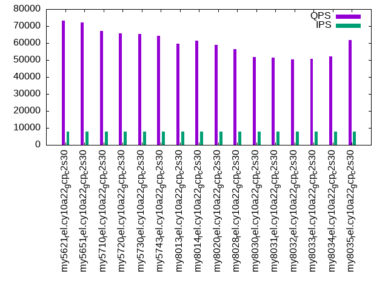

Introduction
This is a report for the insert benchmark with 160M docs and 8 client(s). It is generated by scripts (bash, awk, sed) and Tufte might not be impressed. An overview of the insert benchmark is here and a short update is here. Below, by DBMS, I mean DBMS+version.config. An example is my8020.c10b40 where my means MySQL, 8020 is version 8.0.20 and c10b40 is the name for the configuration file.
The test server is a c2-standard-30 from GCP with 15 cores, hyperthreads disabled, 120G RAM, XFS + SW RAID 0 on 4 NVMe devices (1.5TB). The benchmark was run with 8 client and there were 1 or 3 connections per client (1 for queries or inserts without rate limits, 1+1 for rate limited inserts+deletes). There are 8 tables, client per table. It loads 20M rows per table without secondary indexes, creates secondary indexes, then inserts 100M rows with a delete per insert to avoid growing the table. It then does 3 read+write tests for 1800s each that do queries as fast as possible with 100, 500 and then 1000 inserts/second/client concurrent with the queries and 1000 deletes/second to avoid growing the table. The database is larger than memory.
The tested DBMS are:
- my5621_rel.cy10a22_gcp_c2s30 - MySQL 5.6.21 with InnoDB, rel build, cy10a22_gcp_c2s30 config
- my5651_rel.cy10a22_gcp_c2s30 - MySQL 5.6.51 with InnoDB, rel build, cy10a22_gcp_c2s30 config
- my5710_rel.cy10a22_gcp_c2s30 - MySQL 5.7.10 with InnoDB, rel build, cy10a22_gcp_c2s30 config
- my5720_rel.cy10a22_gcp_c2s30 - MySQL 5.7.20 with InnoDB, rel build, cy10a22_gcp_c2s30 config
- my5730_rel.cy10a22_gcp_c2s30 - MySQL 5.7.30 with InnoDB, rel build, cy10a22_gcp_c2s30 config
- my5743_rel.cy10a22_gcp_c2s30 - MySQL 5.7.43 with InnoDB, rel build, cy10a22_gcp_c2s30 config
- my8013_rel.cy10a22_gcp_c2s30 - MySQL 8.0.13 with InnoDB, rel build, cy10a22_gcp_c2s30 config
- my8014_rel.cy10a22_gcp_c2s30 - MySQL 8.0.14 with InnoDB, rel build, cy10a22_gcp_c2s30 config
- my8020_rel.cy10a22_gcp_c2s30 - MySQL 8.0.20 with InnoDB, rel build, cy10a22_gcp_c2s30 config
- my8028_rel.cy10a22_gcp_c2s30 - MySQL 8.0.28 with InnoDB, rel build, cy10a22_gcp_c2s30 config
- my8030_rel.cy10a22_gcp_c2s30 - MySQL 8.0.30 with InnoDB, rel build, cy10a22_gcp_c2s30 config
- my8031_rel.cy10a22_gcp_c2s30 - MySQL 8.0.31 with InnoDB, rel build, cy10a22_gcp_c2s30 config
- my8032_rel.cy10a22_gcp_c2s30 - MySQL 8.0.32 with InnoDB, rel build, cy10a22_gcp_c2s30 config
- my8033_rel.cy10a22_gcp_c2s30 - MySQL 8.0.33 with InnoDB, rel build, cy10a22_gcp_c2s30 config
- my8034_rel.cy10a22_gcp_c2s30 - MySQL 8.0.34 with InnoDB, rel build, cy10a22_gcp_c2s30 config
- my8035_rel.cy10a22_gcp_c2s30 - MySQL 8.0.35 with InnoDB, rel build, cy10a22_gcp_c2s30 config
Contents
- Summary
- l.i0: load without secondary indexes
- l.x: create secondary indexes
- l.i1: continue load after secondary indexes created
- q100.1: range queries with 100 insert/s per client
- q500.1: range queries with 500 insert/s per client
- q1000.1: range queries with 1000 insert/s per client
Summary
The numbers are inserts/s for l.i0 and l.i1, indexed docs (or rows) /s for l.x and queries/s for q100, q500, q1000. The values are the average rate over the entire test for inserts (IPS) and queries (QPS). The range of values for IPS and QPS is split into 3 parts: bottom 25%, middle 50%, top 25%. Values in the bottom 25% have a red background, values in the top 25% have a green background and values in the middle have no color. A gray background is used for values that can be ignored because the DBMS did not sustain the target insert rate. Red backgrounds are not used when the minimum value is within 80% of the max value.
| dbms | l.i0 | l.x | l.i1 | q100.1 | q500.1 | q1000.1 |
|---|---|---|---|---|---|---|
| my5621_rel.cy10a22_gcp_c2s30 | 428954 | 622957 | 66274 | 76348 | 73983 | 73199 |
| my5651_rel.cy10a22_gcp_c2s30 | 428954 | 606439 | 67380 | 75336 | 74238 | 72310 |
| my5710_rel.cy10a22_gcp_c2s30 | 744186 | 1177206 | 94742 | 68964 | 68055 | 67050 |
| my5720_rel.cy10a22_gcp_c2s30 | 761905 | 1168613 | 101150 | 67923 | 66772 | 65772 |
| my5730_rel.cy10a22_gcp_c2s30 | 761905 | 1185926 | 101652 | 67427 | 66685 | 65325 |
| my5743_rel.cy10a22_gcp_c2s30 | 751174 | 1151798 | 98998 | 66786 | 65752 | 64206 |
| my8013_rel.cy10a22_gcp_c2s30 | 496894 | 1151798 | 94173 | 63159 | 61622 | 59775 |
| my8014_rel.cy10a22_gcp_c2s30 | 495356 | 1143571 | 94607 | 64683 | 63002 | 61265 |
| my8020_rel.cy10a22_gcp_c2s30 | 714286 | 280385 | 99776 | 61667 | 60346 | 58776 |
| my8028_rel.cy10a22_gcp_c2s30 | 720721 | 889444 | 111142 | 58837 | 57734 | 56250 |
| my8030_rel.cy10a22_gcp_c2s30 | 689655 | 851596 | 101833 | 54464 | 53378 | 51782 |
| my8031_rel.cy10a22_gcp_c2s30 | 692641 | 851596 | 101510 | 53958 | 52878 | 51315 |
| my8032_rel.cy10a22_gcp_c2s30 | 661157 | 847090 | 100226 | 52978 | 51914 | 50393 |
| my8033_rel.cy10a22_gcp_c2s30 | 661157 | 842632 | 99763 | 53213 | 52194 | 50637 |
| my8034_rel.cy10a22_gcp_c2s30 | 663900 | 856150 | 104126 | 54755 | 53796 | 52025 |
| my8035_rel.cy10a22_gcp_c2s30 | 669456 | 856150 | 104126 | 64764 | 63666 | 61613 |
This table has relative throughput, throughput for the DBMS relative to the DBMS in the first line, using the absolute throughput from the previous table. Values less than 0.95 have a yellow background. Values greater than 1.05 have a blue background.
| dbms | l.i0 | l.x | l.i1 | q100.1 | q500.1 | q1000.1 |
|---|---|---|---|---|---|---|
| my5621_rel.cy10a22_gcp_c2s30 | 1.00 | 1.00 | 1.00 | 1.00 | 1.00 | 1.00 |
| my5651_rel.cy10a22_gcp_c2s30 | 1.00 | 0.97 | 1.02 | 0.99 | 1.00 | 0.99 |
| my5710_rel.cy10a22_gcp_c2s30 | 1.73 | 1.89 | 1.43 | 0.90 | 0.92 | 0.92 |
| my5720_rel.cy10a22_gcp_c2s30 | 1.78 | 1.88 | 1.53 | 0.89 | 0.90 | 0.90 |
| my5730_rel.cy10a22_gcp_c2s30 | 1.78 | 1.90 | 1.53 | 0.88 | 0.90 | 0.89 |
| my5743_rel.cy10a22_gcp_c2s30 | 1.75 | 1.85 | 1.49 | 0.87 | 0.89 | 0.88 |
| my8013_rel.cy10a22_gcp_c2s30 | 1.16 | 1.85 | 1.42 | 0.83 | 0.83 | 0.82 |
| my8014_rel.cy10a22_gcp_c2s30 | 1.15 | 1.84 | 1.43 | 0.85 | 0.85 | 0.84 |
| my8020_rel.cy10a22_gcp_c2s30 | 1.67 | 0.45 | 1.51 | 0.81 | 0.82 | 0.80 |
| my8028_rel.cy10a22_gcp_c2s30 | 1.68 | 1.43 | 1.68 | 0.77 | 0.78 | 0.77 |
| my8030_rel.cy10a22_gcp_c2s30 | 1.61 | 1.37 | 1.54 | 0.71 | 0.72 | 0.71 |
| my8031_rel.cy10a22_gcp_c2s30 | 1.61 | 1.37 | 1.53 | 0.71 | 0.71 | 0.70 |
| my8032_rel.cy10a22_gcp_c2s30 | 1.54 | 1.36 | 1.51 | 0.69 | 0.70 | 0.69 |
| my8033_rel.cy10a22_gcp_c2s30 | 1.54 | 1.35 | 1.51 | 0.70 | 0.71 | 0.69 |
| my8034_rel.cy10a22_gcp_c2s30 | 1.55 | 1.37 | 1.57 | 0.72 | 0.73 | 0.71 |
| my8035_rel.cy10a22_gcp_c2s30 | 1.56 | 1.37 | 1.57 | 0.85 | 0.86 | 0.84 |
This lists the average rate of inserts/s for the tests that do inserts concurrent with queries. For such tests the query rate is listed in the table above. The read+write tests are setup so that the insert rate should match the target rate every second. Cells that are not at least 95% of the target have a red background to indicate a failure to satisfy the target.
| dbms | q100.1 | q500.1 | q1000.1 |
|---|---|---|---|
| my5621_rel.cy10a22_gcp_c2s30 | 796 | 3978 | 7960 |
| my5651_rel.cy10a22_gcp_c2s30 | 796 | 3980 | 7960 |
| my5710_rel.cy10a22_gcp_c2s30 | 796 | 3980 | 7960 |
| my5720_rel.cy10a22_gcp_c2s30 | 796 | 3980 | 7960 |
| my5730_rel.cy10a22_gcp_c2s30 | 796 | 3978 | 7956 |
| my5743_rel.cy10a22_gcp_c2s30 | 796 | 3978 | 7960 |
| my8013_rel.cy10a22_gcp_c2s30 | 796 | 3978 | 7960 |
| my8014_rel.cy10a22_gcp_c2s30 | 796 | 3978 | 7965 |
| my8020_rel.cy10a22_gcp_c2s30 | 796 | 3978 | 7960 |
| my8028_rel.cy10a22_gcp_c2s30 | 796 | 3978 | 7960 |
| my8030_rel.cy10a22_gcp_c2s30 | 796 | 3978 | 7960 |
| my8031_rel.cy10a22_gcp_c2s30 | 796 | 3978 | 7960 |
| my8032_rel.cy10a22_gcp_c2s30 | 796 | 3978 | 7960 |
| my8033_rel.cy10a22_gcp_c2s30 | 796 | 3978 | 7960 |
| my8034_rel.cy10a22_gcp_c2s30 | 796 | 3978 | 7960 |
| my8035_rel.cy10a22_gcp_c2s30 | 796 | 3978 | 7960 |
| target | 800 | 4000 | 8000 |
l.i0
l.i0: load without secondary indexes. Graphs for performance per 1-second interval are here.
Average throughput:
Insert response time histogram: each cell has the percentage of responses that take <= the time in the header and max is the max response time in seconds. For the max column values in the top 25% of the range have a red background and in the bottom 25% of the range have a green background. The red background is not used when the min value is within 80% of the max value.
| dbms | 256us | 1ms | 4ms | 16ms | 64ms | 256ms | 1s | 4s | 16s | gt | max |
|---|---|---|---|---|---|---|---|---|---|---|---|
| my5621_rel.cy10a22_gcp_c2s30 | 2.315 | 97.432 | 0.074 | 0.165 | 0.014 | 0.198 | |||||
| my5651_rel.cy10a22_gcp_c2s30 | 2.439 | 97.324 | 0.061 | 0.161 | 0.014 | 0.201 | |||||
| my5710_rel.cy10a22_gcp_c2s30 | 87.729 | 12.201 | 0.039 | 0.018 | 0.013 | 0.226 | |||||
| my5720_rel.cy10a22_gcp_c2s30 | 92.100 | 7.824 | 0.042 | 0.019 | 0.014 | 0.001 | 0.661 | ||||
| my5730_rel.cy10a22_gcp_c2s30 | 89.953 | 9.989 | 0.031 | 0.013 | 0.015 | 0.241 | |||||
| my5743_rel.cy10a22_gcp_c2s30 | 89.144 | 10.797 | 0.029 | 0.015 | 0.014 | 0.238 | |||||
| my8013_rel.cy10a22_gcp_c2s30 | 69.730 | 27.349 | 2.870 | 0.036 | 0.014 | 0.232 | |||||
| my8014_rel.cy10a22_gcp_c2s30 | 66.837 | 31.123 | 1.992 | 0.033 | 0.015 | 0.250 | |||||
| my8020_rel.cy10a22_gcp_c2s30 | 85.339 | 14.578 | 0.046 | 0.022 | 0.015 | 0.248 | |||||
| my8028_rel.cy10a22_gcp_c2s30 | 90.933 | 8.994 | 0.044 | 0.012 | 0.016 | nonzero | 0.257 | ||||
| my8030_rel.cy10a22_gcp_c2s30 | 48.686 | 51.233 | 0.053 | 0.013 | 0.014 | 0.226 | |||||
| my8031_rel.cy10a22_gcp_c2s30 | 41.844 | 58.088 | 0.038 | 0.016 | 0.014 | 0.246 | |||||
| my8032_rel.cy10a22_gcp_c2s30 | 7.102 | 92.819 | 0.036 | 0.028 | 0.014 | 0.225 | |||||
| my8033_rel.cy10a22_gcp_c2s30 | 7.772 | 92.136 | 0.047 | 0.030 | 0.015 | 0.250 | |||||
| my8034_rel.cy10a22_gcp_c2s30 | 8.614 | 91.299 | 0.042 | 0.031 | 0.014 | 0.254 | |||||
| my8035_rel.cy10a22_gcp_c2s30 | 12.945 | 86.980 | 0.040 | 0.020 | 0.014 | nonzero | 0.262 |
Performance metrics for the DBMS listed above. Some are normalized by throughput, others are not. Legend for results is here.
ips qps rps rmbps wps wmbps rpq rkbpq wpi wkbpi csps cpups cspq cpupq dbgb1 dbgb2 rss maxop p50 p99 tag 428954 0 3372 13.2 539.3 76.0 0.008 0.031 0.001 0.181 88045 43.1 0.205 15 10.6 139.1 15.6 0.198 55241 44053 160m.my5621_rel.cy10a22_gcp_c2s30 428954 0 3378 13.2 561.5 76.9 0.008 0.031 0.001 0.184 87525 44.2 0.204 15 10.6 139.1 15.6 0.201 55156 44752 160m.my5651_rel.cy10a22_gcp_c2s30 744186 0 0 0.0 1384.0 143.9 0.000 0.000 0.002 0.198 69958 68.7 0.094 14 10.6 139.1 16.8 0.226 101326 78741 160m.my5710_rel.cy10a22_gcp_c2s30 761905 0 0 0.0 1414.3 146.7 0.000 0.000 0.002 0.197 74033 67.8 0.097 13 10.6 139.1 17.0 0.661 105486 82710 160m.my5720_rel.cy10a22_gcp_c2s30 761905 0 0 0.0 1432.0 147.7 0.000 0.000 0.002 0.199 74040 68.5 0.097 13 10.6 139.1 17.0 0.241 104187 82010 160m.my5730_rel.cy10a22_gcp_c2s30 751174 0 0 0.0 1400.9 146.0 0.000 0.000 0.002 0.199 73658 68.8 0.098 14 10.6 139.1 17.0 0.238 103523 80538 160m.my5743_rel.cy10a22_gcp_c2s30 496894 0 3258 12.7 949.0 99.1 0.007 0.026 0.002 0.204 142061 52.5 0.286 16 10.6 139.1 16.2 0.232 83310 22975 160m.my8013_rel.cy10a22_gcp_c2s30 495356 0 3239 12.7 956.1 98.8 0.007 0.026 0.002 0.204 132868 53.8 0.268 16 10.6 139.1 16.1 0.250 80912 22476 160m.my8014_rel.cy10a22_gcp_c2s30 714286 0 0 0.0 1499.4 147.3 0.000 0.000 0.002 0.211 246201 74.0 0.345 16 10.6 139.1 16.7 0.248 98394 77015 160m.my8020_rel.cy10a22_gcp_c2s30 720721 0 0 0.0 1522.4 145.5 0.000 0.000 0.002 0.207 244177 73.2 0.339 15 10.6 139.1 16.7 0.257 100292 78434 160m.my8028_rel.cy10a22_gcp_c2s30 689655 0 0 0.0 1136.4 129.3 0.000 0.000 0.002 0.192 237446 73.0 0.344 16 10.6 139.1 16.2 0.226 94898 75844 160m.my8030_rel.cy10a22_gcp_c2s30 692641 0 0 0.0 1133.0 130.4 0.000 0.000 0.002 0.193 233321 73.2 0.337 16 10.6 139.1 16.2 0.246 94698 73921 160m.my8031_rel.cy10a22_gcp_c2s30 661157 0 0 0.0 1101.1 127.0 0.000 0.000 0.002 0.197 202106 73.0 0.306 17 10.6 139.1 17.1 0.225 90303 71151 160m.my8032_rel.cy10a22_gcp_c2s30 661157 0 0 0.0 1102.4 126.1 0.000 0.000 0.002 0.195 194745 73.0 0.295 17 10.6 139.1 17.1 0.250 90202 73921 160m.my8033_rel.cy10a22_gcp_c2s30 663900 0 0 0.0 1486.3 136.1 0.000 0.000 0.002 0.210 204536 72.9 0.308 16 10.6 139.1 17.1 0.254 90601 69748 160m.my8034_rel.cy10a22_gcp_c2s30 669456 0 0 0.0 1486.7 135.4 0.000 0.000 0.002 0.207 222537 73.3 0.332 16 10.6 139.1 17.2 0.262 91601 71545 160m.my8035_rel.cy10a22_gcp_c2s30
l.x
l.x: create secondary indexes.
Average throughput:
Performance metrics for the DBMS listed above. Some are normalized by throughput, others are not. Legend for results is here.
ips qps rps rmbps wps wmbps rpq rkbpq wpi wkbpi csps cpups cspq cpupq dbgb1 dbgb2 rss maxop p50 p99 tag 622957 0 289 1.1 7905.0 646.7 0.000 0.002 0.013 1.063 18331 38.3 0.029 9 21.7 150.2 26.5 0.001 NA NA 160m.my5621_rel.cy10a22_gcp_c2s30 606439 0 355 1.4 8268.2 639.4 0.001 0.002 0.014 1.080 21578 39.0 0.036 10 21.7 150.2 26.0 0.002 NA NA 160m.my5651_rel.cy10a22_gcp_c2s30 1177206 0 0 0.0 14384.6 1067.8 0.000 0.000 0.012 0.929 62459 36.9 0.053 5 23.6 152.1 25.4 0.029 NA NA 160m.my5710_rel.cy10a22_gcp_c2s30 1168613 0 0 0.0 14151.9 1061.4 0.000 0.000 0.012 0.930 60088 36.5 0.051 5 23.6 152.1 25.1 0.031 NA NA 160m.my5720_rel.cy10a22_gcp_c2s30 1185926 0 0 0.0 14471.2 1068.7 0.000 0.000 0.012 0.923 63100 36.9 0.053 5 23.6 152.1 25.4 0.031 NA NA 160m.my5730_rel.cy10a22_gcp_c2s30 1151798 0 0 0.0 13324.8 1049.8 0.000 0.000 0.012 0.933 59741 36.8 0.052 5 23.6 152.1 24.6 0.031 NA NA 160m.my5743_rel.cy10a22_gcp_c2s30 1151798 0 0 0.0 13476.9 1052.3 0.000 0.000 0.012 0.936 72116 40.5 0.063 5 23.5 152.1 24.8 0.003 NA NA 160m.my8013_rel.cy10a22_gcp_c2s30 1143571 0 0 0.0 14045.3 1028.7 0.000 0.000 0.012 0.921 72491 38.5 0.063 5 23.5 152.1 24.7 0.002 NA NA 160m.my8014_rel.cy10a22_gcp_c2s30 280385 0 2 0.0 3202.8 232.4 0.000 0.000 0.011 0.849 104273 40.4 0.372 22 23.5 152.1 21.0 0.002 NA NA 160m.my8020_rel.cy10a22_gcp_c2s30 889444 0 4452 283.0 18209.9 871.2 0.005 0.326 0.020 1.003 150628 79.3 0.169 13 23.5 152.1 26.6 0.003 NA NA 160m.my8028_rel.cy10a22_gcp_c2s30 851596 0 4330 275.2 17426.5 840.6 0.005 0.331 0.020 1.011 110390 83.5 0.130 15 23.5 152.1 26.8 0.004 NA NA 160m.my8030_rel.cy10a22_gcp_c2s30 851596 0 4331 275.3 17512.7 844.2 0.005 0.331 0.021 1.015 101427 81.1 0.119 14 23.5 152.1 25.1 0.003 NA NA 160m.my8031_rel.cy10a22_gcp_c2s30 847090 0 4327 275.2 17309.1 840.3 0.005 0.333 0.020 1.016 115156 83.8 0.136 15 23.5 152.1 26.1 0.005 NA NA 160m.my8032_rel.cy10a22_gcp_c2s30 842632 0 4221 268.2 17211.6 824.9 0.005 0.326 0.020 1.002 108684 84.2 0.129 15 23.5 152.1 26.4 0.015 NA NA 160m.my8033_rel.cy10a22_gcp_c2s30 856150 0 4330 275.4 17524.1 844.9 0.005 0.329 0.020 1.011 80137 83.6 0.094 15 23.5 152.1 25.8 0.004 NA NA 160m.my8034_rel.cy10a22_gcp_c2s30 856150 0 4332 275.2 17539.5 843.7 0.005 0.329 0.020 1.009 83709 84.5 0.098 15 23.5 152.1 26.1 0.004 NA NA 160m.my8035_rel.cy10a22_gcp_c2s30
l.i1
l.i1: continue load after secondary indexes created. Graphs for performance per 1-second interval are here.
Average throughput:

Insert response time histogram: each cell has the percentage of responses that take <= the time in the header and max is the max response time in seconds. For the max column values in the top 25% of the range have a red background and in the bottom 25% of the range have a green background. The red background is not used when the min value is within 80% of the max value.
| dbms | 256us | 1ms | 4ms | 16ms | 64ms | 256ms | 1s | 4s | 16s | gt | max |
|---|---|---|---|---|---|---|---|---|---|---|---|
| my5621_rel.cy10a22_gcp_c2s30 | nonzero | 21.590 | 77.546 | 0.667 | 0.045 | 0.152 | 0.362 | ||||
| my5651_rel.cy10a22_gcp_c2s30 | nonzero | 23.065 | 76.078 | 0.675 | 0.044 | 0.138 | 0.382 | ||||
| my5710_rel.cy10a22_gcp_c2s30 | 79.270 | 20.249 | 0.103 | 0.051 | 0.327 | 0.582 | |||||
| my5720_rel.cy10a22_gcp_c2s30 | 80.785 | 18.810 | 0.103 | 0.125 | 0.176 | 0.774 | |||||
| my5730_rel.cy10a22_gcp_c2s30 | 81.143 | 18.445 | 0.114 | 0.129 | 0.170 | 0.688 | |||||
| my5743_rel.cy10a22_gcp_c2s30 | 80.866 | 18.687 | 0.112 | 0.125 | 0.209 | 0.433 | |||||
| my8013_rel.cy10a22_gcp_c2s30 | 55.761 | 43.994 | 0.229 | 0.016 | nonzero | 0.490 | |||||
| my8014_rel.cy10a22_gcp_c2s30 | 56.134 | 43.626 | 0.223 | 0.016 | nonzero | 0.520 | |||||
| my8020_rel.cy10a22_gcp_c2s30 | 61.392 | 38.416 | 0.170 | 0.019 | 0.002 | 0.434 | |||||
| my8028_rel.cy10a22_gcp_c2s30 | 73.017 | 26.815 | 0.148 | 0.017 | 0.003 | 0.514 | |||||
| my8030_rel.cy10a22_gcp_c2s30 | 64.551 | 35.237 | 0.189 | 0.019 | 0.004 | 0.452 | |||||
| my8031_rel.cy10a22_gcp_c2s30 | 64.144 | 35.640 | 0.193 | 0.018 | 0.004 | 0.553 | |||||
| my8032_rel.cy10a22_gcp_c2s30 | 62.434 | 37.371 | 0.173 | 0.019 | 0.003 | 0.423 | |||||
| my8033_rel.cy10a22_gcp_c2s30 | 61.930 | 37.873 | 0.175 | 0.020 | 0.003 | 0.406 | |||||
| my8034_rel.cy10a22_gcp_c2s30 | 67.115 | 32.664 | 0.198 | 0.019 | 0.003 | 0.396 | |||||
| my8035_rel.cy10a22_gcp_c2s30 | 67.145 | 32.632 | 0.200 | 0.020 | 0.003 | 0.475 |
Delete response time histogram: each cell has the percentage of responses that take <= the time in the header and max is the max response time in seconds. For the max column values in the top 25% of the range have a red background and in the bottom 25% of the range have a green background. The red background is not used when the min value is within 80% of the max value.
| dbms | 256us | 1ms | 4ms | 16ms | 64ms | 256ms | 1s | 4s | 16s | gt | max |
|---|---|---|---|---|---|---|---|---|---|---|---|
| my5621_rel.cy10a22_gcp_c2s30 | 0.001 | 46.233 | 53.049 | 0.525 | 0.040 | 0.151 | 0.361 | ||||
| my5651_rel.cy10a22_gcp_c2s30 | 0.001 | 48.421 | 50.868 | 0.534 | 0.039 | 0.138 | 0.373 | ||||
| my5710_rel.cy10a22_gcp_c2s30 | 0.001 | 83.779 | 15.765 | 0.079 | 0.076 | 0.301 | 0.433 | ||||
| my5720_rel.cy10a22_gcp_c2s30 | 0.001 | 85.320 | 14.299 | 0.082 | 0.173 | 0.126 | 0.414 | ||||
| my5730_rel.cy10a22_gcp_c2s30 | 0.001 | 85.789 | 13.825 | 0.089 | 0.177 | 0.119 | 0.561 | ||||
| my5743_rel.cy10a22_gcp_c2s30 | 0.001 | 85.651 | 13.932 | 0.087 | 0.181 | 0.149 | 0.427 | ||||
| my8013_rel.cy10a22_gcp_c2s30 | 68.812 | 31.009 | 0.164 | 0.014 | nonzero | 0.488 | |||||
| my8014_rel.cy10a22_gcp_c2s30 | 68.702 | 31.118 | 0.165 | 0.014 | nonzero | 0.521 | |||||
| my8020_rel.cy10a22_gcp_c2s30 | 72.541 | 27.320 | 0.125 | 0.012 | 0.002 | 0.433 | |||||
| my8028_rel.cy10a22_gcp_c2s30 | 80.408 | 19.466 | 0.111 | 0.012 | 0.003 | 0.535 | |||||
| my8030_rel.cy10a22_gcp_c2s30 | 74.402 | 25.446 | 0.136 | 0.012 | 0.004 | 0.449 | |||||
| my8031_rel.cy10a22_gcp_c2s30 | 74.452 | 25.395 | 0.138 | 0.012 | 0.003 | 0.535 | |||||
| my8032_rel.cy10a22_gcp_c2s30 | 73.374 | 26.486 | 0.124 | 0.012 | 0.003 | 0.416 | |||||
| my8033_rel.cy10a22_gcp_c2s30 | 72.744 | 27.116 | 0.125 | 0.013 | 0.002 | 0.403 | |||||
| my8034_rel.cy10a22_gcp_c2s30 | 75.761 | 24.079 | 0.145 | 0.013 | 0.003 | 0.399 | |||||
| my8035_rel.cy10a22_gcp_c2s30 | 76.013 | 23.825 | 0.146 | 0.013 | 0.003 | 0.479 |
Performance metrics for the DBMS listed above. Some are normalized by throughput, others are not. Legend for results is here.
ips qps rps rmbps wps wmbps rpq rkbpq wpi wkbpi csps cpups cspq cpupq dbgb1 dbgb2 rss maxop p50 p99 tag 66274 0 2036 8.0 3494.8 136.6 0.031 0.123 0.053 2.111 164426 62.7 2.481 142 36.9 165.7 42.4 0.362 8990 150 160m.my5621_rel.cy10a22_gcp_c2s30 67380 0 2070 8.1 3560.7 139.1 0.031 0.123 0.053 2.114 165480 63.7 2.456 142 36.9 165.7 42.4 0.382 9093 150 160m.my5651_rel.cy10a22_gcp_c2s30 94742 0 0 0.0 5060.3 197.4 0.000 0.000 0.053 2.134 52741 78.2 0.557 124 37.1 166.0 43.9 0.582 14889 150 160m.my5710_rel.cy10a22_gcp_c2s30 101150 0 0 0.0 5265.6 207.0 0.000 0.000 0.052 2.096 46316 79.9 0.458 118 37.1 165.9 43.9 0.774 15292 150 160m.my5720_rel.cy10a22_gcp_c2s30 101652 0 0 0.0 5275.5 207.6 0.000 0.000 0.052 2.091 46540 79.9 0.458 118 37.1 166.0 43.9 0.688 15334 150 160m.my5730_rel.cy10a22_gcp_c2s30 98998 0 0 0.0 5216.2 204.3 0.000 0.000 0.053 2.113 46239 79.3 0.467 120 37.1 166.0 43.9 0.433 15233 150 160m.my5743_rel.cy10a22_gcp_c2s30 94173 0 0 0.0 4905.6 199.5 0.000 0.000 0.052 2.170 177512 84.5 1.885 135 35.7 164.7 42.5 0.490 11887 9090 160m.my8013_rel.cy10a22_gcp_c2s30 94607 0 0 0.0 4936.4 200.4 0.000 0.000 0.052 2.169 187820 84.8 1.985 134 35.8 164.8 42.6 0.520 11887 9343 160m.my8014_rel.cy10a22_gcp_c2s30 99776 0 92 1.4 5458.7 206.5 0.001 0.015 0.055 2.119 159875 84.8 1.602 127 35.3 164.3 42.1 0.434 12686 9096 160m.my8020_rel.cy10a22_gcp_c2s30 111142 0 102 1.6 5897.0 226.5 0.001 0.015 0.053 2.087 176014 84.1 1.584 114 33.8 162.7 40.6 0.514 14234 9485 160m.my8028_rel.cy10a22_gcp_c2s30 101833 0 94 1.5 6766.0 263.7 0.001 0.015 0.066 2.652 181104 84.4 1.778 124 32.6 161.4 39.3 0.452 13135 7184 160m.my8030_rel.cy10a22_gcp_c2s30 101510 0 93 1.5 6741.0 262.7 0.001 0.015 0.066 2.650 181240 84.4 1.785 125 32.2 160.9 38.9 0.553 13038 7142 160m.my8031_rel.cy10a22_gcp_c2s30 100226 0 92 1.4 6726.3 259.7 0.001 0.015 0.067 2.653 180156 84.6 1.798 127 34.1 163.0 40.9 0.423 12837 7945 160m.my8032_rel.cy10a22_gcp_c2s30 99763 0 92 1.4 6688.4 259.4 0.001 0.015 0.067 2.662 178360 84.8 1.788 128 33.3 162.2 40.1 0.406 12836 7593 160m.my8033_rel.cy10a22_gcp_c2s30 104126 0 96 1.5 6831.1 267.6 0.001 0.015 0.066 2.632 184087 84.2 1.768 121 31.8 160.5 38.5 0.396 13385 7345 160m.my8034_rel.cy10a22_gcp_c2s30 104126 0 96 1.5 6840.9 268.0 0.001 0.015 0.066 2.635 183625 84.2 1.763 121 32.2 160.9 38.9 0.475 13385 7142 160m.my8035_rel.cy10a22_gcp_c2s30
q100.1
q100.1: range queries with 100 insert/s per client. Graphs for performance per 1-second interval are here.
Average throughput:
Query response time histogram: each cell has the percentage of responses that take <= the time in the header and max is the max response time in seconds. For max values in the top 25% of the range have a red background and in the bottom 25% of the range have a green background. The red background is not used when the min value is within 80% of the max value.
| dbms | 256us | 1ms | 4ms | 16ms | 64ms | 256ms | 1s | 4s | 16s | gt | max |
|---|---|---|---|---|---|---|---|---|---|---|---|
| my5621_rel.cy10a22_gcp_c2s30 | 99.930 | 0.066 | 0.003 | 0.001 | nonzero | 0.026 | |||||
| my5651_rel.cy10a22_gcp_c2s30 | 99.928 | 0.069 | 0.003 | 0.001 | 0.012 | ||||||
| my5710_rel.cy10a22_gcp_c2s30 | 99.897 | 0.100 | 0.003 | nonzero | nonzero | 0.023 | |||||
| my5720_rel.cy10a22_gcp_c2s30 | 99.887 | 0.111 | 0.002 | nonzero | nonzero | 0.024 | |||||
| my5730_rel.cy10a22_gcp_c2s30 | 99.879 | 0.119 | 0.002 | nonzero | nonzero | 0.020 | |||||
| my5743_rel.cy10a22_gcp_c2s30 | 99.900 | 0.097 | 0.002 | nonzero | nonzero | 0.016 | |||||
| my8013_rel.cy10a22_gcp_c2s30 | 99.879 | 0.117 | 0.004 | nonzero | nonzero | 0.019 | |||||
| my8014_rel.cy10a22_gcp_c2s30 | 99.909 | 0.087 | 0.004 | nonzero | 0.015 | ||||||
| my8020_rel.cy10a22_gcp_c2s30 | 99.876 | 0.120 | 0.004 | nonzero | 0.010 | ||||||
| my8028_rel.cy10a22_gcp_c2s30 | 99.859 | 0.139 | 0.002 | nonzero | 0.010 | ||||||
| my8030_rel.cy10a22_gcp_c2s30 | 99.798 | 0.199 | 0.002 | nonzero | 0.014 | ||||||
| my8031_rel.cy10a22_gcp_c2s30 | 99.789 | 0.209 | 0.002 | nonzero | 0.015 | ||||||
| my8032_rel.cy10a22_gcp_c2s30 | 99.761 | 0.237 | 0.002 | nonzero | 0.011 | ||||||
| my8033_rel.cy10a22_gcp_c2s30 | 99.758 | 0.240 | 0.002 | nonzero | 0.012 | ||||||
| my8034_rel.cy10a22_gcp_c2s30 | 99.807 | 0.191 | 0.002 | nonzero | 0.011 | ||||||
| my8035_rel.cy10a22_gcp_c2s30 | 99.885 | 0.113 | 0.002 | nonzero | 0.007 |
Insert response time histogram: each cell has the percentage of responses that take <= the time in the header and max is the max response time in seconds. For max values in the top 25% of the range have a red background and in the bottom 25% of the range have a green background. The red background is not used when the min value is within 80% of the max value.
| dbms | 256us | 1ms | 4ms | 16ms | 64ms | 256ms | 1s | 4s | 16s | gt | max |
|---|---|---|---|---|---|---|---|---|---|---|---|
| my5621_rel.cy10a22_gcp_c2s30 | 93.708 | 6.052 | 0.240 | 0.040 | |||||||
| my5651_rel.cy10a22_gcp_c2s30 | 95.458 | 4.542 | 0.015 | ||||||||
| my5710_rel.cy10a22_gcp_c2s30 | 98.017 | 1.948 | 0.035 | 0.022 | |||||||
| my5720_rel.cy10a22_gcp_c2s30 | 99.031 | 0.969 | 0.013 | ||||||||
| my5730_rel.cy10a22_gcp_c2s30 | 99.233 | 0.764 | 0.003 | 0.018 | |||||||
| my5743_rel.cy10a22_gcp_c2s30 | 99.382 | 0.615 | 0.003 | 0.018 | |||||||
| my8013_rel.cy10a22_gcp_c2s30 | 92.979 | 7.017 | 0.003 | 0.021 | |||||||
| my8014_rel.cy10a22_gcp_c2s30 | 84.062 | 15.934 | 0.003 | 0.017 | |||||||
| my8020_rel.cy10a22_gcp_c2s30 | 86.125 | 13.875 | 0.013 | ||||||||
| my8028_rel.cy10a22_gcp_c2s30 | 95.299 | 4.701 | 0.015 | ||||||||
| my8030_rel.cy10a22_gcp_c2s30 | 93.830 | 6.170 | 0.015 | ||||||||
| my8031_rel.cy10a22_gcp_c2s30 | 93.812 | 6.188 | 0.014 | ||||||||
| my8032_rel.cy10a22_gcp_c2s30 | 92.868 | 7.132 | 0.016 | ||||||||
| my8033_rel.cy10a22_gcp_c2s30 | 93.486 | 6.514 | 0.015 | ||||||||
| my8034_rel.cy10a22_gcp_c2s30 | 93.774 | 6.226 | 0.014 | ||||||||
| my8035_rel.cy10a22_gcp_c2s30 | 95.750 | 4.250 | 0.013 |
Delete response time histogram: each cell has the percentage of responses that take <= the time in the header and max is the max response time in seconds. For max values in the top 25% of the range have a red background and in the bottom 25% of the range have a green background. The red background is not used when the min value is within 80% of the max value.
| dbms | 256us | 1ms | 4ms | 16ms | 64ms | 256ms | 1s | 4s | 16s | gt | max |
|---|---|---|---|---|---|---|---|---|---|---|---|
| my5621_rel.cy10a22_gcp_c2s30 | 0.035 | 97.872 | 1.885 | 0.208 | 0.041 | ||||||
| my5651_rel.cy10a22_gcp_c2s30 | 0.087 | 98.615 | 1.299 | 0.014 | |||||||
| my5710_rel.cy10a22_gcp_c2s30 | 99.316 | 0.663 | 0.021 | 0.027 | |||||||
| my5720_rel.cy10a22_gcp_c2s30 | 99.747 | 0.247 | 0.007 | 0.029 | |||||||
| my5730_rel.cy10a22_gcp_c2s30 | 99.719 | 0.281 | 0.013 | ||||||||
| my5743_rel.cy10a22_gcp_c2s30 | 99.715 | 0.281 | 0.003 | 0.018 | |||||||
| my8013_rel.cy10a22_gcp_c2s30 | 95.354 | 4.646 | 0.015 | ||||||||
| my8014_rel.cy10a22_gcp_c2s30 | 89.660 | 10.340 | 0.013 | ||||||||
| my8020_rel.cy10a22_gcp_c2s30 | 90.653 | 9.347 | 0.013 | ||||||||
| my8028_rel.cy10a22_gcp_c2s30 | 97.080 | 2.920 | 0.014 | ||||||||
| my8030_rel.cy10a22_gcp_c2s30 | 96.080 | 3.920 | 0.014 | ||||||||
| my8031_rel.cy10a22_gcp_c2s30 | 96.344 | 3.656 | 0.010 | ||||||||
| my8032_rel.cy10a22_gcp_c2s30 | 96.101 | 3.899 | 0.014 | ||||||||
| my8033_rel.cy10a22_gcp_c2s30 | 96.128 | 3.872 | 0.015 | ||||||||
| my8034_rel.cy10a22_gcp_c2s30 | 96.003 | 3.997 | 0.015 | ||||||||
| my8035_rel.cy10a22_gcp_c2s30 | 97.694 | 2.306 | 0.011 |
Performance metrics for the DBMS listed above. Some are normalized by throughput, others are not. Legend for results is here.
ips qps rps rmbps wps wmbps rpq rkbpq wpi wkbpi csps cpups cspq cpupq dbgb1 dbgb2 rss maxop p50 p99 tag 796 76348 28 0.1 1681.6 51.5 0.000 0.001 2.114 66.343 293268 53.8 3.841 106 36.9 165.7 42.4 0.026 9685 8119 160m.my5621_rel.cy10a22_gcp_c2s30 796 75336 28 0.1 1515.7 46.6 0.000 0.001 1.905 59.940 289297 53.7 3.840 107 36.9 165.7 42.4 0.012 9542 8902 160m.my5651_rel.cy10a22_gcp_c2s30 796 68964 0 0.0 648.2 20.4 0.000 0.000 0.815 26.254 262519 55.3 3.807 120 37.1 166.0 43.8 0.023 8758 7032 160m.my5710_rel.cy10a22_gcp_c2s30 796 67923 0 0.0 650.9 20.5 0.000 0.000 0.818 26.331 259525 55.3 3.821 122 37.1 165.9 43.8 0.024 8599 6793 160m.my5720_rel.cy10a22_gcp_c2s30 796 67427 0 0.0 645.1 20.3 0.000 0.000 0.811 26.078 257309 55.3 3.816 123 37.1 166.0 43.8 0.020 8570 6841 160m.my5730_rel.cy10a22_gcp_c2s30 796 66786 0 0.0 659.9 20.8 0.000 0.000 0.830 26.759 254262 55.3 3.807 124 37.1 166.0 43.9 0.016 8487 6524 160m.my5743_rel.cy10a22_gcp_c2s30 796 63159 0 0.0 474.7 14.5 0.000 0.000 0.597 18.670 243289 54.0 3.852 128 35.7 164.7 42.5 0.019 7866 7720 160m.my8013_rel.cy10a22_gcp_c2s30 796 64683 0 0.0 496.6 15.2 0.000 0.000 0.624 19.493 248965 54.2 3.849 126 35.8 164.8 42.6 0.015 8071 7915 160m.my8014_rel.cy10a22_gcp_c2s30 796 61667 0 0.0 565.9 15.9 0.000 0.000 0.711 20.499 237714 54.2 3.855 132 35.3 164.3 42.1 0.010 7720 7530 160m.my8020_rel.cy10a22_gcp_c2s30 796 58837 0 0.0 571.6 16.1 0.000 0.000 0.719 20.770 226573 54.1 3.851 138 33.8 162.7 40.6 0.010 7400 7160 160m.my8028_rel.cy10a22_gcp_c2s30 796 54464 0 0.0 562.2 15.9 0.000 0.000 0.707 20.508 210132 54.2 3.858 149 32.6 161.4 39.3 0.014 6857 6633 160m.my8030_rel.cy10a22_gcp_c2s30 796 53958 0 0.0 571.2 16.2 0.000 0.000 0.718 20.800 208142 54.2 3.857 151 32.2 160.9 38.9 0.015 6777 6553 160m.my8031_rel.cy10a22_gcp_c2s30 796 52978 0 0.0 574.3 16.3 0.000 0.000 0.722 20.962 204498 54.1 3.860 153 34.1 163.0 40.9 0.011 6665 6459 160m.my8032_rel.cy10a22_gcp_c2s30 796 53213 0 0.0 581.3 16.5 0.000 0.000 0.731 21.197 205411 54.2 3.860 153 33.3 162.2 40.1 0.012 6713 6505 160m.my8033_rel.cy10a22_gcp_c2s30 796 54755 0 0.0 564.8 16.0 0.000 0.000 0.710 20.577 211271 54.2 3.858 148 31.8 160.5 38.5 0.011 6873 6649 160m.my8034_rel.cy10a22_gcp_c2s30 796 64764 0 0.0 562.6 15.9 0.000 0.000 0.707 20.518 249471 54.3 3.852 126 32.2 160.9 38.9 0.007 8119 7847 160m.my8035_rel.cy10a22_gcp_c2s30
q500.1
q500.1: range queries with 500 insert/s per client. Graphs for performance per 1-second interval are here.
Average throughput:
Query response time histogram: each cell has the percentage of responses that take <= the time in the header and max is the max response time in seconds. For max values in the top 25% of the range have a red background and in the bottom 25% of the range have a green background. The red background is not used when the min value is within 80% of the max value.
| dbms | 256us | 1ms | 4ms | 16ms | 64ms | 256ms | 1s | 4s | 16s | gt | max |
|---|---|---|---|---|---|---|---|---|---|---|---|
| my5621_rel.cy10a22_gcp_c2s30 | 99.663 | 0.303 | 0.033 | 0.001 | 0.014 | ||||||
| my5651_rel.cy10a22_gcp_c2s30 | 99.659 | 0.307 | 0.033 | 0.001 | 0.011 | ||||||
| my5710_rel.cy10a22_gcp_c2s30 | 99.855 | 0.127 | 0.016 | 0.001 | nonzero | 0.025 | |||||
| my5720_rel.cy10a22_gcp_c2s30 | 99.837 | 0.147 | 0.015 | 0.001 | nonzero | 0.024 | |||||
| my5730_rel.cy10a22_gcp_c2s30 | 99.839 | 0.145 | 0.015 | 0.001 | nonzero | 0.026 | |||||
| my5743_rel.cy10a22_gcp_c2s30 | 99.868 | 0.123 | 0.009 | nonzero | nonzero | 0.024 | |||||
| my8013_rel.cy10a22_gcp_c2s30 | 99.784 | 0.183 | 0.027 | 0.006 | nonzero | nonzero | 0.067 | ||||
| my8014_rel.cy10a22_gcp_c2s30 | 99.804 | 0.159 | 0.034 | 0.002 | 0.001 | nonzero | 0.067 | ||||
| my8020_rel.cy10a22_gcp_c2s30 | 99.767 | 0.198 | 0.033 | 0.002 | nonzero | 0.018 | |||||
| my8028_rel.cy10a22_gcp_c2s30 | 99.760 | 0.218 | 0.020 | 0.002 | nonzero | 0.024 | |||||
| my8030_rel.cy10a22_gcp_c2s30 | 99.647 | 0.330 | 0.020 | 0.002 | nonzero | 0.026 | |||||
| my8031_rel.cy10a22_gcp_c2s30 | 99.630 | 0.348 | 0.019 | 0.002 | nonzero | 0.028 | |||||
| my8032_rel.cy10a22_gcp_c2s30 | 99.593 | 0.381 | 0.023 | 0.003 | nonzero | 0.028 | |||||
| my8033_rel.cy10a22_gcp_c2s30 | 99.595 | 0.382 | 0.020 | 0.002 | nonzero | 0.027 | |||||
| my8034_rel.cy10a22_gcp_c2s30 | 99.677 | 0.301 | 0.020 | 0.002 | nonzero | 0.026 | |||||
| my8035_rel.cy10a22_gcp_c2s30 | 99.829 | 0.153 | 0.017 | 0.002 | nonzero | 0.028 |
Insert response time histogram: each cell has the percentage of responses that take <= the time in the header and max is the max response time in seconds. For max values in the top 25% of the range have a red background and in the bottom 25% of the range have a green background. The red background is not used when the min value is within 80% of the max value.
| dbms | 256us | 1ms | 4ms | 16ms | 64ms | 256ms | 1s | 4s | 16s | gt | max |
|---|---|---|---|---|---|---|---|---|---|---|---|
| my5621_rel.cy10a22_gcp_c2s30 | 40.730 | 58.012 | 1.258 | 0.034 | |||||||
| my5651_rel.cy10a22_gcp_c2s30 | 34.712 | 63.934 | 1.353 | 0.033 | |||||||
| my5710_rel.cy10a22_gcp_c2s30 | 91.372 | 8.488 | 0.140 | 0.031 | |||||||
| my5720_rel.cy10a22_gcp_c2s30 | 94.473 | 5.469 | 0.058 | 0.027 | |||||||
| my5730_rel.cy10a22_gcp_c2s30 | 94.068 | 5.855 | 0.077 | 0.028 | |||||||
| my5743_rel.cy10a22_gcp_c2s30 | 97.435 | 2.537 | 0.028 | 0.026 | |||||||
| my8013_rel.cy10a22_gcp_c2s30 | 71.196 | 25.370 | 3.176 | 0.258 | 0.101 | ||||||
| my8014_rel.cy10a22_gcp_c2s30 | 56.477 | 40.255 | 2.927 | 0.341 | 0.095 | ||||||
| my8020_rel.cy10a22_gcp_c2s30 | 57.869 | 41.594 | 0.536 | 0.034 | |||||||
| my8028_rel.cy10a22_gcp_c2s30 | 73.617 | 25.551 | 0.832 | 0.034 | |||||||
| my8030_rel.cy10a22_gcp_c2s30 | 71.081 | 27.817 | 1.102 | 0.037 | |||||||
| my8031_rel.cy10a22_gcp_c2s30 | 72.686 | 26.306 | 1.008 | 0.034 | |||||||
| my8032_rel.cy10a22_gcp_c2s30 | 65.581 | 33.074 | 1.345 | 0.040 | |||||||
| my8033_rel.cy10a22_gcp_c2s30 | 70.175 | 28.446 | 1.379 | 0.039 | |||||||
| my8034_rel.cy10a22_gcp_c2s30 | 72.767 | 26.084 | 1.149 | 0.042 | |||||||
| my8035_rel.cy10a22_gcp_c2s30 | 74.110 | 25.036 | 0.854 | 0.037 |
Delete response time histogram: each cell has the percentage of responses that take <= the time in the header and max is the max response time in seconds. For max values in the top 25% of the range have a red background and in the bottom 25% of the range have a green background. The red background is not used when the min value is within 80% of the max value.
| dbms | 256us | 1ms | 4ms | 16ms | 64ms | 256ms | 1s | 4s | 16s | gt | max |
|---|---|---|---|---|---|---|---|---|---|---|---|
| my5621_rel.cy10a22_gcp_c2s30 | 0.004 | 51.053 | 48.202 | 0.740 | 0.032 | ||||||
| my5651_rel.cy10a22_gcp_c2s30 | 0.008 | 42.811 | 56.428 | 0.753 | 0.029 | ||||||
| my5710_rel.cy10a22_gcp_c2s30 | 0.006 | 94.477 | 5.439 | 0.078 | 0.027 | ||||||
| my5720_rel.cy10a22_gcp_c2s30 | 0.010 | 96.308 | 3.626 | 0.056 | 0.025 | ||||||
| my5730_rel.cy10a22_gcp_c2s30 | 0.022 | 95.941 | 3.985 | 0.052 | 0.028 | ||||||
| my5743_rel.cy10a22_gcp_c2s30 | 98.118 | 1.858 | 0.024 | 0.026 | |||||||
| my8013_rel.cy10a22_gcp_c2s30 | 77.597 | 19.968 | 2.258 | 0.176 | 0.091 | ||||||
| my8014_rel.cy10a22_gcp_c2s30 | 64.267 | 33.029 | 2.432 | 0.272 | 0.083 | ||||||
| my8020_rel.cy10a22_gcp_c2s30 | 66.232 | 33.486 | 0.282 | 0.031 | |||||||
| my8028_rel.cy10a22_gcp_c2s30 | 79.861 | 19.583 | 0.556 | 0.035 | |||||||
| my8030_rel.cy10a22_gcp_c2s30 | 77.770 | 21.467 | 0.763 | 0.038 | |||||||
| my8031_rel.cy10a22_gcp_c2s30 | 79.059 | 20.268 | 0.673 | 0.036 | |||||||
| my8032_rel.cy10a22_gcp_c2s30 | 73.026 | 26.034 | 0.940 | 0.038 | |||||||
| my8033_rel.cy10a22_gcp_c2s30 | 77.000 | 22.077 | 0.923 | 0.037 | |||||||
| my8034_rel.cy10a22_gcp_c2s30 | 79.383 | 19.865 | 0.752 | 0.035 | |||||||
| my8035_rel.cy10a22_gcp_c2s30 | 80.675 | 18.771 | 0.554 | 0.036 |
Performance metrics for the DBMS listed above. Some are normalized by throughput, others are not. Legend for results is here.
ips qps rps rmbps wps wmbps rpq rkbpq wpi wkbpi csps cpups cspq cpupq dbgb1 dbgb2 rss maxop p50 p99 tag 3978 73983 114 0.4 3359.9 103.2 0.002 0.006 0.845 26.575 289001 55.5 3.906 113 36.9 165.7 42.4 0.014 9370 8842 160m.my5621_rel.cy10a22_gcp_c2s30 3980 74238 115 0.4 15.9 2.3 0.002 0.006 0.004 0.605 284772 55.1 3.836 111 36.9 165.7 42.4 0.011 9350 9206 160m.my5651_rel.cy10a22_gcp_c2s30 3980 68055 0 0.0 223.4 8.4 0.000 0.000 0.056 2.159 256805 56.4 3.774 124 37.1 166.0 43.8 0.025 8646 8503 160m.my5710_rel.cy10a22_gcp_c2s30 3980 66772 0 0.0 215.6 8.1 0.000 0.000 0.054 2.087 252474 56.4 3.781 127 37.1 165.9 43.8 0.024 8391 8247 160m.my5720_rel.cy10a22_gcp_c2s30 3978 66685 0 0.0 216.6 8.2 0.000 0.000 0.054 2.100 252072 56.6 3.780 127 37.1 166.0 43.7 0.026 8423 8279 160m.my5730_rel.cy10a22_gcp_c2s30 3978 65752 0 0.0 222.3 8.4 0.000 0.000 0.056 2.150 249664 56.5 3.797 129 37.1 166.0 43.8 0.024 8330 8202 160m.my5743_rel.cy10a22_gcp_c2s30 3978 61622 0 0.0 189.2 7.3 0.000 0.000 0.048 1.868 245685 56.3 3.987 137 35.7 164.7 42.5 0.067 7672 7288 160m.my8013_rel.cy10a22_gcp_c2s30 3978 63002 0 0.0 195.0 7.5 0.000 0.000 0.049 1.924 244980 55.9 3.888 133 35.8 164.8 42.6 0.067 7882 7432 160m.my8014_rel.cy10a22_gcp_c2s30 3978 60346 0 0.0 199.2 7.3 0.000 0.000 0.050 1.876 231110 55.9 3.830 139 35.3 164.3 42.0 0.018 7496 7400 160m.my8020_rel.cy10a22_gcp_c2s30 3978 57734 0 0.0 190.9 7.1 0.000 0.000 0.048 1.834 220641 55.6 3.822 144 33.8 162.7 40.6 0.024 7240 7131 160m.my8028_rel.cy10a22_gcp_c2s30 3978 53378 0 0.0 234.3 8.8 0.000 0.000 0.059 2.258 204382 56.1 3.829 158 32.6 161.4 39.3 0.026 6697 6585 160m.my8030_rel.cy10a22_gcp_c2s30 3978 52878 0 0.0 240.2 8.9 0.000 0.000 0.060 2.302 202567 56.1 3.831 159 32.2 160.9 38.9 0.028 6635 6521 160m.my8031_rel.cy10a22_gcp_c2s30 3978 51914 0 0.0 238.8 8.9 0.000 0.000 0.060 2.296 198701 56.0 3.828 162 34.1 163.0 40.9 0.028 6505 6409 160m.my8032_rel.cy10a22_gcp_c2s30 3978 52194 0 0.0 237.3 8.9 0.000 0.000 0.060 2.280 199705 56.1 3.826 161 33.3 162.2 40.1 0.027 6553 6457 160m.my8033_rel.cy10a22_gcp_c2s30 3978 53796 0 0.0 232.3 8.7 0.000 0.000 0.058 2.245 206046 56.1 3.830 156 31.8 160.5 38.5 0.026 6715 6617 160m.my8034_rel.cy10a22_gcp_c2s30 3978 63666 0 0.0 232.2 8.7 0.000 0.000 0.058 2.251 242878 56.1 3.815 132 32.2 160.9 38.9 0.028 7943 7815 160m.my8035_rel.cy10a22_gcp_c2s30
q1000.1
q1000.1: range queries with 1000 insert/s per client. Graphs for performance per 1-second interval are here.
Average throughput:
Query response time histogram: each cell has the percentage of responses that take <= the time in the header and max is the max response time in seconds. For max values in the top 25% of the range have a red background and in the bottom 25% of the range have a green background. The red background is not used when the min value is within 80% of the max value.
| dbms | 256us | 1ms | 4ms | 16ms | 64ms | 256ms | 1s | 4s | 16s | gt | max |
|---|---|---|---|---|---|---|---|---|---|---|---|
| my5621_rel.cy10a22_gcp_c2s30 | 99.397 | 0.541 | 0.061 | 0.001 | 0.012 | ||||||
| my5651_rel.cy10a22_gcp_c2s30 | 99.384 | 0.550 | 0.065 | 0.001 | nonzero | 0.040 | |||||
| my5710_rel.cy10a22_gcp_c2s30 | 99.783 | 0.173 | 0.041 | 0.004 | nonzero | 0.028 | |||||
| my5720_rel.cy10a22_gcp_c2s30 | 99.795 | 0.165 | 0.037 | 0.004 | nonzero | 0.032 | |||||
| my5730_rel.cy10a22_gcp_c2s30 | 99.785 | 0.176 | 0.035 | 0.004 | nonzero | nonzero | 0.077 | ||||
| my5743_rel.cy10a22_gcp_c2s30 | 99.787 | 0.185 | 0.025 | 0.002 | nonzero | 0.028 | |||||
| my8013_rel.cy10a22_gcp_c2s30 | 99.593 | 0.323 | 0.068 | 0.016 | 0.001 | nonzero | 0.070 | ||||
| my8014_rel.cy10a22_gcp_c2s30 | 99.657 | 0.262 | 0.074 | 0.006 | 0.001 | nonzero | 0.070 | ||||
| my8020_rel.cy10a22_gcp_c2s30 | 99.647 | 0.300 | 0.049 | 0.004 | 0.015 | ||||||
| my8028_rel.cy10a22_gcp_c2s30 | 99.629 | 0.314 | 0.051 | 0.005 | nonzero | 0.026 | |||||
| my8030_rel.cy10a22_gcp_c2s30 | 99.474 | 0.475 | 0.045 | 0.006 | nonzero | 0.022 | |||||
| my8031_rel.cy10a22_gcp_c2s30 | 99.447 | 0.500 | 0.047 | 0.006 | nonzero | 0.031 | |||||
| my8032_rel.cy10a22_gcp_c2s30 | 99.397 | 0.549 | 0.048 | 0.006 | nonzero | 0.028 | |||||
| my8033_rel.cy10a22_gcp_c2s30 | 99.346 | 0.597 | 0.050 | 0.007 | nonzero | 0.028 | |||||
| my8034_rel.cy10a22_gcp_c2s30 | 99.478 | 0.478 | 0.040 | 0.005 | nonzero | 0.026 | |||||
| my8035_rel.cy10a22_gcp_c2s30 | 99.733 | 0.227 | 0.036 | 0.004 | nonzero | 0.028 |
Insert response time histogram: each cell has the percentage of responses that take <= the time in the header and max is the max response time in seconds. For max values in the top 25% of the range have a red background and in the bottom 25% of the range have a green background. The red background is not used when the min value is within 80% of the max value.
| dbms | 256us | 1ms | 4ms | 16ms | 64ms | 256ms | 1s | 4s | 16s | gt | max |
|---|---|---|---|---|---|---|---|---|---|---|---|
| my5621_rel.cy10a22_gcp_c2s30 | nonzero | 38.816 | 59.737 | 1.447 | 0.036 | ||||||
| my5651_rel.cy10a22_gcp_c2s30 | 38.673 | 59.784 | 1.543 | 0.038 | |||||||
| my5710_rel.cy10a22_gcp_c2s30 | 80.866 | 18.716 | 0.418 | 0.040 | |||||||
| my5720_rel.cy10a22_gcp_c2s30 | 85.210 | 14.457 | 0.333 | 0.055 | |||||||
| my5730_rel.cy10a22_gcp_c2s30 | 85.756 | 13.943 | 0.301 | nonzero | 0.079 | ||||||
| my5743_rel.cy10a22_gcp_c2s30 | 90.065 | 9.719 | 0.216 | 0.054 | |||||||
| my8013_rel.cy10a22_gcp_c2s30 | 61.309 | 34.689 | 3.847 | 0.155 | 0.101 | ||||||
| my8014_rel.cy10a22_gcp_c2s30 | 55.638 | 41.765 | 2.405 | 0.192 | 0.089 | ||||||
| my8020_rel.cy10a22_gcp_c2s30 | 70.384 | 29.187 | 0.430 | 0.037 | |||||||
| my8028_rel.cy10a22_gcp_c2s30 | 66.160 | 32.002 | 1.837 | 0.044 | |||||||
| my8030_rel.cy10a22_gcp_c2s30 | 71.775 | 26.540 | 1.685 | 0.053 | |||||||
| my8031_rel.cy10a22_gcp_c2s30 | 69.316 | 28.550 | 2.134 | 0.044 | |||||||
| my8032_rel.cy10a22_gcp_c2s30 | 67.948 | 30.205 | 1.847 | 0.047 | |||||||
| my8033_rel.cy10a22_gcp_c2s30 | 69.833 | 28.217 | 1.950 | 0.042 | |||||||
| my8034_rel.cy10a22_gcp_c2s30 | 75.546 | 23.106 | 1.348 | 0.046 | |||||||
| my8035_rel.cy10a22_gcp_c2s30 | 73.229 | 25.412 | 1.359 | 0.043 |
Delete response time histogram: each cell has the percentage of responses that take <= the time in the header and max is the max response time in seconds. For max values in the top 25% of the range have a red background and in the bottom 25% of the range have a green background. The red background is not used when the min value is within 80% of the max value.
| dbms | 256us | 1ms | 4ms | 16ms | 64ms | 256ms | 1s | 4s | 16s | gt | max |
|---|---|---|---|---|---|---|---|---|---|---|---|
| my5621_rel.cy10a22_gcp_c2s30 | 0.010 | 47.676 | 51.426 | 0.887 | 0.034 | ||||||
| my5651_rel.cy10a22_gcp_c2s30 | 0.018 | 47.497 | 51.569 | 0.916 | 0.035 | ||||||
| my5710_rel.cy10a22_gcp_c2s30 | 0.017 | 86.583 | 13.135 | 0.265 | 0.043 | ||||||
| my5720_rel.cy10a22_gcp_c2s30 | 0.013 | 89.107 | 10.630 | 0.250 | 0.034 | ||||||
| my5730_rel.cy10a22_gcp_c2s30 | 0.011 | 89.825 | 9.952 | 0.210 | nonzero | 0.085 | |||||
| my5743_rel.cy10a22_gcp_c2s30 | 0.010 | 92.414 | 7.402 | 0.174 | 0.033 | ||||||
| my8013_rel.cy10a22_gcp_c2s30 | 69.191 | 27.745 | 2.930 | 0.134 | 0.093 | ||||||
| my8014_rel.cy10a22_gcp_c2s30 | 63.698 | 34.024 | 2.117 | 0.161 | 0.085 | ||||||
| my8020_rel.cy10a22_gcp_c2s30 | 76.842 | 22.891 | 0.267 | 0.034 | |||||||
| my8028_rel.cy10a22_gcp_c2s30 | 73.538 | 25.147 | 1.315 | 0.043 | |||||||
| my8030_rel.cy10a22_gcp_c2s30 | 78.261 | 20.561 | 1.177 | 0.040 | |||||||
| my8031_rel.cy10a22_gcp_c2s30 | 76.284 | 22.175 | 1.541 | 0.049 | |||||||
| my8032_rel.cy10a22_gcp_c2s30 | 75.922 | 22.820 | 1.259 | 0.047 | |||||||
| my8033_rel.cy10a22_gcp_c2s30 | 76.588 | 22.053 | 1.359 | 0.046 | |||||||
| my8034_rel.cy10a22_gcp_c2s30 | 81.141 | 17.818 | 1.042 | 0.052 | |||||||
| my8035_rel.cy10a22_gcp_c2s30 | 79.099 | 19.897 | 1.005 | 0.046 |
Performance metrics for the DBMS listed above. Some are normalized by throughput, others are not. Legend for results is here.
ips qps rps rmbps wps wmbps rpq rkbpq wpi wkbpi csps cpups cspq cpupq dbgb1 dbgb2 rss maxop p50 p99 tag 7960 73199 230 0.9 676.9 24.0 0.003 0.013 0.085 3.084 279888 57.6 3.824 118 36.9 165.7 42.4 0.012 9193 8998 160m.my5621_rel.cy10a22_gcp_c2s30 7960 72310 228 0.9 781.9 27.3 0.003 0.013 0.098 3.513 276111 57.7 3.818 120 36.9 165.7 42.4 0.040 9097 8870 160m.my5651_rel.cy10a22_gcp_c2s30 7960 67050 0 0.0 823.5 28.5 0.000 0.000 0.103 3.661 247979 58.8 3.698 132 37.1 166.0 43.8 0.028 8503 8343 160m.my5710_rel.cy10a22_gcp_c2s30 7960 65772 0 0.0 842.3 29.0 0.000 0.000 0.106 3.730 243644 58.9 3.704 134 37.1 165.9 43.8 0.032 8311 8151 160m.my5720_rel.cy10a22_gcp_c2s30 7956 65325 0 0.0 845.5 29.1 0.000 0.000 0.106 3.740 242202 59.0 3.708 135 37.1 166.0 43.7 0.077 8247 8071 160m.my5730_rel.cy10a22_gcp_c2s30 7960 64206 0 0.0 840.1 28.9 0.000 0.000 0.106 3.720 240162 59.0 3.741 138 37.1 166.0 43.7 0.028 8074 7927 160m.my5743_rel.cy10a22_gcp_c2s30 7960 59775 0 0.0 789.0 27.4 0.000 0.000 0.099 3.521 250220 59.1 4.186 148 35.7 164.7 42.4 0.070 7448 7096 160m.my8013_rel.cy10a22_gcp_c2s30 7965 61265 0 0.0 797.2 27.6 0.000 0.000 0.100 3.544 237737 58.5 3.880 143 35.8 164.8 42.6 0.070 7659 7225 160m.my8014_rel.cy10a22_gcp_c2s30 7960 58776 0 0.0 845.9 27.1 0.000 0.000 0.106 3.490 224160 58.5 3.814 149 35.3 164.3 42.0 0.015 7336 7124 160m.my8020_rel.cy10a22_gcp_c2s30 7960 56250 0 0.0 832.9 26.8 0.000 0.000 0.105 3.451 214121 58.3 3.807 155 33.8 162.7 40.6 0.026 7048 6825 160m.my8028_rel.cy10a22_gcp_c2s30 7960 51782 0 0.0 1151.1 36.7 0.000 0.000 0.145 4.720 199740 58.8 3.857 170 32.6 161.4 39.3 0.022 6489 6281 160m.my8030_rel.cy10a22_gcp_c2s30 7960 51315 0 0.0 1119.5 35.8 0.000 0.000 0.141 4.601 197110 58.8 3.841 172 32.2 160.9 38.9 0.031 6443 6252 160m.my8031_rel.cy10a22_gcp_c2s30 7960 50393 0 0.0 1113.4 35.7 0.000 0.000 0.140 4.590 193073 58.9 3.831 175 34.1 163.0 40.9 0.028 6303 6128 160m.my8032_rel.cy10a22_gcp_c2s30 7960 50637 0 0.0 1167.9 37.2 0.000 0.000 0.147 4.780 194768 59.0 3.846 175 33.3 162.2 40.1 0.028 6361 6201 160m.my8033_rel.cy10a22_gcp_c2s30 7960 52025 0 0.0 1299.7 40.8 0.000 0.000 0.163 5.252 201048 58.8 3.864 170 31.8 160.5 38.5 0.026 6505 6298 160m.my8034_rel.cy10a22_gcp_c2s30 7960 61613 0 0.0 1275.4 40.2 0.000 0.000 0.160 5.177 235734 58.8 3.826 143 32.2 160.9 38.9 0.028 7720 7432 160m.my8035_rel.cy10a22_gcp_c2s30
l.i0
l.i0: load without secondary indexes
Performance metrics for all DBMS, not just the ones listed above. Some are normalized by throughput, others are not. Legend for results is here.
ips qps rps rmbps wps wmbps rpq rkbpq wpi wkbpi csps cpups cspq cpupq dbgb1 dbgb2 rss maxop p50 p99 tag 428954 0 3372 13.2 539.3 76.0 0.008 0.031 0.001 0.181 88045 43.1 0.205 15 10.6 139.1 15.6 0.198 55241 44053 160m.my5621_rel.cy10a22_gcp_c2s30 428954 0 3378 13.2 561.5 76.9 0.008 0.031 0.001 0.184 87525 44.2 0.204 15 10.6 139.1 15.6 0.201 55156 44752 160m.my5651_rel.cy10a22_gcp_c2s30 744186 0 0 0.0 1384.0 143.9 0.000 0.000 0.002 0.198 69958 68.7 0.094 14 10.6 139.1 16.8 0.226 101326 78741 160m.my5710_rel.cy10a22_gcp_c2s30 761905 0 0 0.0 1414.3 146.7 0.000 0.000 0.002 0.197 74033 67.8 0.097 13 10.6 139.1 17.0 0.661 105486 82710 160m.my5720_rel.cy10a22_gcp_c2s30 761905 0 0 0.0 1432.0 147.7 0.000 0.000 0.002 0.199 74040 68.5 0.097 13 10.6 139.1 17.0 0.241 104187 82010 160m.my5730_rel.cy10a22_gcp_c2s30 751174 0 0 0.0 1400.9 146.0 0.000 0.000 0.002 0.199 73658 68.8 0.098 14 10.6 139.1 17.0 0.238 103523 80538 160m.my5743_rel.cy10a22_gcp_c2s30 496894 0 3258 12.7 949.0 99.1 0.007 0.026 0.002 0.204 142061 52.5 0.286 16 10.6 139.1 16.2 0.232 83310 22975 160m.my8013_rel.cy10a22_gcp_c2s30 495356 0 3239 12.7 956.1 98.8 0.007 0.026 0.002 0.204 132868 53.8 0.268 16 10.6 139.1 16.1 0.250 80912 22476 160m.my8014_rel.cy10a22_gcp_c2s30 714286 0 0 0.0 1499.4 147.3 0.000 0.000 0.002 0.211 246201 74.0 0.345 16 10.6 139.1 16.7 0.248 98394 77015 160m.my8020_rel.cy10a22_gcp_c2s30 720721 0 0 0.0 1522.4 145.5 0.000 0.000 0.002 0.207 244177 73.2 0.339 15 10.6 139.1 16.7 0.257 100292 78434 160m.my8028_rel.cy10a22_gcp_c2s30 689655 0 0 0.0 1136.4 129.3 0.000 0.000 0.002 0.192 237446 73.0 0.344 16 10.6 139.1 16.2 0.226 94898 75844 160m.my8030_rel.cy10a22_gcp_c2s30 692641 0 0 0.0 1133.0 130.4 0.000 0.000 0.002 0.193 233321 73.2 0.337 16 10.6 139.1 16.2 0.246 94698 73921 160m.my8031_rel.cy10a22_gcp_c2s30 661157 0 0 0.0 1101.1 127.0 0.000 0.000 0.002 0.197 202106 73.0 0.306 17 10.6 139.1 17.1 0.225 90303 71151 160m.my8032_rel.cy10a22_gcp_c2s30 661157 0 0 0.0 1102.4 126.1 0.000 0.000 0.002 0.195 194745 73.0 0.295 17 10.6 139.1 17.1 0.250 90202 73921 160m.my8033_rel.cy10a22_gcp_c2s30 663900 0 0 0.0 1486.3 136.1 0.000 0.000 0.002 0.210 204536 72.9 0.308 16 10.6 139.1 17.1 0.254 90601 69748 160m.my8034_rel.cy10a22_gcp_c2s30 669456 0 0 0.0 1486.7 135.4 0.000 0.000 0.002 0.207 222537 73.3 0.332 16 10.6 139.1 17.2 0.262 91601 71545 160m.my8035_rel.cy10a22_gcp_c2s30
l.x
l.x: create secondary indexes
Performance metrics for all DBMS, not just the ones listed above. Some are normalized by throughput, others are not. Legend for results is here.
ips qps rps rmbps wps wmbps rpq rkbpq wpi wkbpi csps cpups cspq cpupq dbgb1 dbgb2 rss maxop p50 p99 tag 622957 0 289 1.1 7905.0 646.7 0.000 0.002 0.013 1.063 18331 38.3 0.029 9 21.7 150.2 26.5 0.001 NA NA 160m.my5621_rel.cy10a22_gcp_c2s30 606439 0 355 1.4 8268.2 639.4 0.001 0.002 0.014 1.080 21578 39.0 0.036 10 21.7 150.2 26.0 0.002 NA NA 160m.my5651_rel.cy10a22_gcp_c2s30 1177206 0 0 0.0 14384.6 1067.8 0.000 0.000 0.012 0.929 62459 36.9 0.053 5 23.6 152.1 25.4 0.029 NA NA 160m.my5710_rel.cy10a22_gcp_c2s30 1168613 0 0 0.0 14151.9 1061.4 0.000 0.000 0.012 0.930 60088 36.5 0.051 5 23.6 152.1 25.1 0.031 NA NA 160m.my5720_rel.cy10a22_gcp_c2s30 1185926 0 0 0.0 14471.2 1068.7 0.000 0.000 0.012 0.923 63100 36.9 0.053 5 23.6 152.1 25.4 0.031 NA NA 160m.my5730_rel.cy10a22_gcp_c2s30 1151798 0 0 0.0 13324.8 1049.8 0.000 0.000 0.012 0.933 59741 36.8 0.052 5 23.6 152.1 24.6 0.031 NA NA 160m.my5743_rel.cy10a22_gcp_c2s30 1151798 0 0 0.0 13476.9 1052.3 0.000 0.000 0.012 0.936 72116 40.5 0.063 5 23.5 152.1 24.8 0.003 NA NA 160m.my8013_rel.cy10a22_gcp_c2s30 1143571 0 0 0.0 14045.3 1028.7 0.000 0.000 0.012 0.921 72491 38.5 0.063 5 23.5 152.1 24.7 0.002 NA NA 160m.my8014_rel.cy10a22_gcp_c2s30 280385 0 2 0.0 3202.8 232.4 0.000 0.000 0.011 0.849 104273 40.4 0.372 22 23.5 152.1 21.0 0.002 NA NA 160m.my8020_rel.cy10a22_gcp_c2s30 889444 0 4452 283.0 18209.9 871.2 0.005 0.326 0.020 1.003 150628 79.3 0.169 13 23.5 152.1 26.6 0.003 NA NA 160m.my8028_rel.cy10a22_gcp_c2s30 851596 0 4330 275.2 17426.5 840.6 0.005 0.331 0.020 1.011 110390 83.5 0.130 15 23.5 152.1 26.8 0.004 NA NA 160m.my8030_rel.cy10a22_gcp_c2s30 851596 0 4331 275.3 17512.7 844.2 0.005 0.331 0.021 1.015 101427 81.1 0.119 14 23.5 152.1 25.1 0.003 NA NA 160m.my8031_rel.cy10a22_gcp_c2s30 847090 0 4327 275.2 17309.1 840.3 0.005 0.333 0.020 1.016 115156 83.8 0.136 15 23.5 152.1 26.1 0.005 NA NA 160m.my8032_rel.cy10a22_gcp_c2s30 842632 0 4221 268.2 17211.6 824.9 0.005 0.326 0.020 1.002 108684 84.2 0.129 15 23.5 152.1 26.4 0.015 NA NA 160m.my8033_rel.cy10a22_gcp_c2s30 856150 0 4330 275.4 17524.1 844.9 0.005 0.329 0.020 1.011 80137 83.6 0.094 15 23.5 152.1 25.8 0.004 NA NA 160m.my8034_rel.cy10a22_gcp_c2s30 856150 0 4332 275.2 17539.5 843.7 0.005 0.329 0.020 1.009 83709 84.5 0.098 15 23.5 152.1 26.1 0.004 NA NA 160m.my8035_rel.cy10a22_gcp_c2s30
l.i1
l.i1: continue load after secondary indexes created
Performance metrics for all DBMS, not just the ones listed above. Some are normalized by throughput, others are not. Legend for results is here.
ips qps rps rmbps wps wmbps rpq rkbpq wpi wkbpi csps cpups cspq cpupq dbgb1 dbgb2 rss maxop p50 p99 tag 66274 0 2036 8.0 3494.8 136.6 0.031 0.123 0.053 2.111 164426 62.7 2.481 142 36.9 165.7 42.4 0.362 8990 150 160m.my5621_rel.cy10a22_gcp_c2s30 67380 0 2070 8.1 3560.7 139.1 0.031 0.123 0.053 2.114 165480 63.7 2.456 142 36.9 165.7 42.4 0.382 9093 150 160m.my5651_rel.cy10a22_gcp_c2s30 94742 0 0 0.0 5060.3 197.4 0.000 0.000 0.053 2.134 52741 78.2 0.557 124 37.1 166.0 43.9 0.582 14889 150 160m.my5710_rel.cy10a22_gcp_c2s30 101150 0 0 0.0 5265.6 207.0 0.000 0.000 0.052 2.096 46316 79.9 0.458 118 37.1 165.9 43.9 0.774 15292 150 160m.my5720_rel.cy10a22_gcp_c2s30 101652 0 0 0.0 5275.5 207.6 0.000 0.000 0.052 2.091 46540 79.9 0.458 118 37.1 166.0 43.9 0.688 15334 150 160m.my5730_rel.cy10a22_gcp_c2s30 98998 0 0 0.0 5216.2 204.3 0.000 0.000 0.053 2.113 46239 79.3 0.467 120 37.1 166.0 43.9 0.433 15233 150 160m.my5743_rel.cy10a22_gcp_c2s30 94173 0 0 0.0 4905.6 199.5 0.000 0.000 0.052 2.170 177512 84.5 1.885 135 35.7 164.7 42.5 0.490 11887 9090 160m.my8013_rel.cy10a22_gcp_c2s30 94607 0 0 0.0 4936.4 200.4 0.000 0.000 0.052 2.169 187820 84.8 1.985 134 35.8 164.8 42.6 0.520 11887 9343 160m.my8014_rel.cy10a22_gcp_c2s30 99776 0 92 1.4 5458.7 206.5 0.001 0.015 0.055 2.119 159875 84.8 1.602 127 35.3 164.3 42.1 0.434 12686 9096 160m.my8020_rel.cy10a22_gcp_c2s30 111142 0 102 1.6 5897.0 226.5 0.001 0.015 0.053 2.087 176014 84.1 1.584 114 33.8 162.7 40.6 0.514 14234 9485 160m.my8028_rel.cy10a22_gcp_c2s30 101833 0 94 1.5 6766.0 263.7 0.001 0.015 0.066 2.652 181104 84.4 1.778 124 32.6 161.4 39.3 0.452 13135 7184 160m.my8030_rel.cy10a22_gcp_c2s30 101510 0 93 1.5 6741.0 262.7 0.001 0.015 0.066 2.650 181240 84.4 1.785 125 32.2 160.9 38.9 0.553 13038 7142 160m.my8031_rel.cy10a22_gcp_c2s30 100226 0 92 1.4 6726.3 259.7 0.001 0.015 0.067 2.653 180156 84.6 1.798 127 34.1 163.0 40.9 0.423 12837 7945 160m.my8032_rel.cy10a22_gcp_c2s30 99763 0 92 1.4 6688.4 259.4 0.001 0.015 0.067 2.662 178360 84.8 1.788 128 33.3 162.2 40.1 0.406 12836 7593 160m.my8033_rel.cy10a22_gcp_c2s30 104126 0 96 1.5 6831.1 267.6 0.001 0.015 0.066 2.632 184087 84.2 1.768 121 31.8 160.5 38.5 0.396 13385 7345 160m.my8034_rel.cy10a22_gcp_c2s30 104126 0 96 1.5 6840.9 268.0 0.001 0.015 0.066 2.635 183625 84.2 1.763 121 32.2 160.9 38.9 0.475 13385 7142 160m.my8035_rel.cy10a22_gcp_c2s30
q100.1
q100.1: range queries with 100 insert/s per client
Performance metrics for all DBMS, not just the ones listed above. Some are normalized by throughput, others are not. Legend for results is here.
ips qps rps rmbps wps wmbps rpq rkbpq wpi wkbpi csps cpups cspq cpupq dbgb1 dbgb2 rss maxop p50 p99 tag 796 76348 28 0.1 1681.6 51.5 0.000 0.001 2.114 66.343 293268 53.8 3.841 106 36.9 165.7 42.4 0.026 9685 8119 160m.my5621_rel.cy10a22_gcp_c2s30 796 75336 28 0.1 1515.7 46.6 0.000 0.001 1.905 59.940 289297 53.7 3.840 107 36.9 165.7 42.4 0.012 9542 8902 160m.my5651_rel.cy10a22_gcp_c2s30 796 68964 0 0.0 648.2 20.4 0.000 0.000 0.815 26.254 262519 55.3 3.807 120 37.1 166.0 43.8 0.023 8758 7032 160m.my5710_rel.cy10a22_gcp_c2s30 796 67923 0 0.0 650.9 20.5 0.000 0.000 0.818 26.331 259525 55.3 3.821 122 37.1 165.9 43.8 0.024 8599 6793 160m.my5720_rel.cy10a22_gcp_c2s30 796 67427 0 0.0 645.1 20.3 0.000 0.000 0.811 26.078 257309 55.3 3.816 123 37.1 166.0 43.8 0.020 8570 6841 160m.my5730_rel.cy10a22_gcp_c2s30 796 66786 0 0.0 659.9 20.8 0.000 0.000 0.830 26.759 254262 55.3 3.807 124 37.1 166.0 43.9 0.016 8487 6524 160m.my5743_rel.cy10a22_gcp_c2s30 796 63159 0 0.0 474.7 14.5 0.000 0.000 0.597 18.670 243289 54.0 3.852 128 35.7 164.7 42.5 0.019 7866 7720 160m.my8013_rel.cy10a22_gcp_c2s30 796 64683 0 0.0 496.6 15.2 0.000 0.000 0.624 19.493 248965 54.2 3.849 126 35.8 164.8 42.6 0.015 8071 7915 160m.my8014_rel.cy10a22_gcp_c2s30 796 61667 0 0.0 565.9 15.9 0.000 0.000 0.711 20.499 237714 54.2 3.855 132 35.3 164.3 42.1 0.010 7720 7530 160m.my8020_rel.cy10a22_gcp_c2s30 796 58837 0 0.0 571.6 16.1 0.000 0.000 0.719 20.770 226573 54.1 3.851 138 33.8 162.7 40.6 0.010 7400 7160 160m.my8028_rel.cy10a22_gcp_c2s30 796 54464 0 0.0 562.2 15.9 0.000 0.000 0.707 20.508 210132 54.2 3.858 149 32.6 161.4 39.3 0.014 6857 6633 160m.my8030_rel.cy10a22_gcp_c2s30 796 53958 0 0.0 571.2 16.2 0.000 0.000 0.718 20.800 208142 54.2 3.857 151 32.2 160.9 38.9 0.015 6777 6553 160m.my8031_rel.cy10a22_gcp_c2s30 796 52978 0 0.0 574.3 16.3 0.000 0.000 0.722 20.962 204498 54.1 3.860 153 34.1 163.0 40.9 0.011 6665 6459 160m.my8032_rel.cy10a22_gcp_c2s30 796 53213 0 0.0 581.3 16.5 0.000 0.000 0.731 21.197 205411 54.2 3.860 153 33.3 162.2 40.1 0.012 6713 6505 160m.my8033_rel.cy10a22_gcp_c2s30 796 54755 0 0.0 564.8 16.0 0.000 0.000 0.710 20.577 211271 54.2 3.858 148 31.8 160.5 38.5 0.011 6873 6649 160m.my8034_rel.cy10a22_gcp_c2s30 796 64764 0 0.0 562.6 15.9 0.000 0.000 0.707 20.518 249471 54.3 3.852 126 32.2 160.9 38.9 0.007 8119 7847 160m.my8035_rel.cy10a22_gcp_c2s30
q500.1
q500.1: range queries with 500 insert/s per client
Performance metrics for all DBMS, not just the ones listed above. Some are normalized by throughput, others are not. Legend for results is here.
ips qps rps rmbps wps wmbps rpq rkbpq wpi wkbpi csps cpups cspq cpupq dbgb1 dbgb2 rss maxop p50 p99 tag 3978 73983 114 0.4 3359.9 103.2 0.002 0.006 0.845 26.575 289001 55.5 3.906 113 36.9 165.7 42.4 0.014 9370 8842 160m.my5621_rel.cy10a22_gcp_c2s30 3980 74238 115 0.4 15.9 2.3 0.002 0.006 0.004 0.605 284772 55.1 3.836 111 36.9 165.7 42.4 0.011 9350 9206 160m.my5651_rel.cy10a22_gcp_c2s30 3980 68055 0 0.0 223.4 8.4 0.000 0.000 0.056 2.159 256805 56.4 3.774 124 37.1 166.0 43.8 0.025 8646 8503 160m.my5710_rel.cy10a22_gcp_c2s30 3980 66772 0 0.0 215.6 8.1 0.000 0.000 0.054 2.087 252474 56.4 3.781 127 37.1 165.9 43.8 0.024 8391 8247 160m.my5720_rel.cy10a22_gcp_c2s30 3978 66685 0 0.0 216.6 8.2 0.000 0.000 0.054 2.100 252072 56.6 3.780 127 37.1 166.0 43.7 0.026 8423 8279 160m.my5730_rel.cy10a22_gcp_c2s30 3978 65752 0 0.0 222.3 8.4 0.000 0.000 0.056 2.150 249664 56.5 3.797 129 37.1 166.0 43.8 0.024 8330 8202 160m.my5743_rel.cy10a22_gcp_c2s30 3978 61622 0 0.0 189.2 7.3 0.000 0.000 0.048 1.868 245685 56.3 3.987 137 35.7 164.7 42.5 0.067 7672 7288 160m.my8013_rel.cy10a22_gcp_c2s30 3978 63002 0 0.0 195.0 7.5 0.000 0.000 0.049 1.924 244980 55.9 3.888 133 35.8 164.8 42.6 0.067 7882 7432 160m.my8014_rel.cy10a22_gcp_c2s30 3978 60346 0 0.0 199.2 7.3 0.000 0.000 0.050 1.876 231110 55.9 3.830 139 35.3 164.3 42.0 0.018 7496 7400 160m.my8020_rel.cy10a22_gcp_c2s30 3978 57734 0 0.0 190.9 7.1 0.000 0.000 0.048 1.834 220641 55.6 3.822 144 33.8 162.7 40.6 0.024 7240 7131 160m.my8028_rel.cy10a22_gcp_c2s30 3978 53378 0 0.0 234.3 8.8 0.000 0.000 0.059 2.258 204382 56.1 3.829 158 32.6 161.4 39.3 0.026 6697 6585 160m.my8030_rel.cy10a22_gcp_c2s30 3978 52878 0 0.0 240.2 8.9 0.000 0.000 0.060 2.302 202567 56.1 3.831 159 32.2 160.9 38.9 0.028 6635 6521 160m.my8031_rel.cy10a22_gcp_c2s30 3978 51914 0 0.0 238.8 8.9 0.000 0.000 0.060 2.296 198701 56.0 3.828 162 34.1 163.0 40.9 0.028 6505 6409 160m.my8032_rel.cy10a22_gcp_c2s30 3978 52194 0 0.0 237.3 8.9 0.000 0.000 0.060 2.280 199705 56.1 3.826 161 33.3 162.2 40.1 0.027 6553 6457 160m.my8033_rel.cy10a22_gcp_c2s30 3978 53796 0 0.0 232.3 8.7 0.000 0.000 0.058 2.245 206046 56.1 3.830 156 31.8 160.5 38.5 0.026 6715 6617 160m.my8034_rel.cy10a22_gcp_c2s30 3978 63666 0 0.0 232.2 8.7 0.000 0.000 0.058 2.251 242878 56.1 3.815 132 32.2 160.9 38.9 0.028 7943 7815 160m.my8035_rel.cy10a22_gcp_c2s30
q1000.1
q1000.1: range queries with 1000 insert/s per client
Performance metrics for all DBMS, not just the ones listed above. Some are normalized by throughput, others are not. Legend for results is here.
ips qps rps rmbps wps wmbps rpq rkbpq wpi wkbpi csps cpups cspq cpupq dbgb1 dbgb2 rss maxop p50 p99 tag 7960 73199 230 0.9 676.9 24.0 0.003 0.013 0.085 3.084 279888 57.6 3.824 118 36.9 165.7 42.4 0.012 9193 8998 160m.my5621_rel.cy10a22_gcp_c2s30 7960 72310 228 0.9 781.9 27.3 0.003 0.013 0.098 3.513 276111 57.7 3.818 120 36.9 165.7 42.4 0.040 9097 8870 160m.my5651_rel.cy10a22_gcp_c2s30 7960 67050 0 0.0 823.5 28.5 0.000 0.000 0.103 3.661 247979 58.8 3.698 132 37.1 166.0 43.8 0.028 8503 8343 160m.my5710_rel.cy10a22_gcp_c2s30 7960 65772 0 0.0 842.3 29.0 0.000 0.000 0.106 3.730 243644 58.9 3.704 134 37.1 165.9 43.8 0.032 8311 8151 160m.my5720_rel.cy10a22_gcp_c2s30 7956 65325 0 0.0 845.5 29.1 0.000 0.000 0.106 3.740 242202 59.0 3.708 135 37.1 166.0 43.7 0.077 8247 8071 160m.my5730_rel.cy10a22_gcp_c2s30 7960 64206 0 0.0 840.1 28.9 0.000 0.000 0.106 3.720 240162 59.0 3.741 138 37.1 166.0 43.7 0.028 8074 7927 160m.my5743_rel.cy10a22_gcp_c2s30 7960 59775 0 0.0 789.0 27.4 0.000 0.000 0.099 3.521 250220 59.1 4.186 148 35.7 164.7 42.4 0.070 7448 7096 160m.my8013_rel.cy10a22_gcp_c2s30 7965 61265 0 0.0 797.2 27.6 0.000 0.000 0.100 3.544 237737 58.5 3.880 143 35.8 164.8 42.6 0.070 7659 7225 160m.my8014_rel.cy10a22_gcp_c2s30 7960 58776 0 0.0 845.9 27.1 0.000 0.000 0.106 3.490 224160 58.5 3.814 149 35.3 164.3 42.0 0.015 7336 7124 160m.my8020_rel.cy10a22_gcp_c2s30 7960 56250 0 0.0 832.9 26.8 0.000 0.000 0.105 3.451 214121 58.3 3.807 155 33.8 162.7 40.6 0.026 7048 6825 160m.my8028_rel.cy10a22_gcp_c2s30 7960 51782 0 0.0 1151.1 36.7 0.000 0.000 0.145 4.720 199740 58.8 3.857 170 32.6 161.4 39.3 0.022 6489 6281 160m.my8030_rel.cy10a22_gcp_c2s30 7960 51315 0 0.0 1119.5 35.8 0.000 0.000 0.141 4.601 197110 58.8 3.841 172 32.2 160.9 38.9 0.031 6443 6252 160m.my8031_rel.cy10a22_gcp_c2s30 7960 50393 0 0.0 1113.4 35.7 0.000 0.000 0.140 4.590 193073 58.9 3.831 175 34.1 163.0 40.9 0.028 6303 6128 160m.my8032_rel.cy10a22_gcp_c2s30 7960 50637 0 0.0 1167.9 37.2 0.000 0.000 0.147 4.780 194768 59.0 3.846 175 33.3 162.2 40.1 0.028 6361 6201 160m.my8033_rel.cy10a22_gcp_c2s30 7960 52025 0 0.0 1299.7 40.8 0.000 0.000 0.163 5.252 201048 58.8 3.864 170 31.8 160.5 38.5 0.026 6505 6298 160m.my8034_rel.cy10a22_gcp_c2s30 7960 61613 0 0.0 1275.4 40.2 0.000 0.000 0.160 5.177 235734 58.8 3.826 143 32.2 160.9 38.9 0.028 7720 7432 160m.my8035_rel.cy10a22_gcp_c2s30
l.i0
- l.i0: load without secondary indexes
- Legend for results is here.
- Each entry lists the percentage of responses that fit in that bucket (slower than max time for previous bucket, faster than min time for next bucket).
Insert response time histogram
256us 1ms 4ms 16ms 64ms 256ms 1s 4s 16s gt max tag 0.000 2.315 97.432 0.074 0.165 0.014 0.000 0.000 0.000 0.000 0.198 my5621_rel.cy10a22_gcp_c2s30 0.000 2.439 97.324 0.061 0.161 0.014 0.000 0.000 0.000 0.000 0.201 my5651_rel.cy10a22_gcp_c2s30 0.000 87.729 12.201 0.039 0.018 0.013 0.000 0.000 0.000 0.000 0.226 my5710_rel.cy10a22_gcp_c2s30 0.000 92.100 7.824 0.042 0.019 0.014 0.001 0.000 0.000 0.000 0.661 my5720_rel.cy10a22_gcp_c2s30 0.000 89.953 9.989 0.031 0.013 0.015 0.000 0.000 0.000 0.000 0.241 my5730_rel.cy10a22_gcp_c2s30 0.000 89.144 10.797 0.029 0.015 0.014 0.000 0.000 0.000 0.000 0.238 my5743_rel.cy10a22_gcp_c2s30 0.000 69.730 27.349 2.870 0.036 0.014 0.000 0.000 0.000 0.000 0.232 my8013_rel.cy10a22_gcp_c2s30 0.000 66.837 31.123 1.992 0.033 0.015 0.000 0.000 0.000 0.000 0.250 my8014_rel.cy10a22_gcp_c2s30 0.000 85.339 14.578 0.046 0.022 0.015 0.000 0.000 0.000 0.000 0.248 my8020_rel.cy10a22_gcp_c2s30 0.000 90.933 8.994 0.044 0.012 0.016 nonzero 0.000 0.000 0.000 0.257 my8028_rel.cy10a22_gcp_c2s30 0.000 48.686 51.233 0.053 0.013 0.014 0.000 0.000 0.000 0.000 0.226 my8030_rel.cy10a22_gcp_c2s30 0.000 41.844 58.088 0.038 0.016 0.014 0.000 0.000 0.000 0.000 0.246 my8031_rel.cy10a22_gcp_c2s30 0.000 7.102 92.819 0.036 0.028 0.014 0.000 0.000 0.000 0.000 0.225 my8032_rel.cy10a22_gcp_c2s30 0.000 7.772 92.136 0.047 0.030 0.015 0.000 0.000 0.000 0.000 0.250 my8033_rel.cy10a22_gcp_c2s30 0.000 8.614 91.299 0.042 0.031 0.014 0.000 0.000 0.000 0.000 0.254 my8034_rel.cy10a22_gcp_c2s30 0.000 12.945 86.980 0.040 0.020 0.014 nonzero 0.000 0.000 0.000 0.262 my8035_rel.cy10a22_gcp_c2s30
l.x
- l.x: create secondary indexes
- Legend for results is here.
- Each entry lists the percentage of responses that fit in that bucket (slower than max time for previous bucket, faster than min time for next bucket).
TODO - determine whether there is data for create index response time
l.i1
- l.i1: continue load after secondary indexes created
- Legend for results is here.
- Each entry lists the percentage of responses that fit in that bucket (slower than max time for previous bucket, faster than min time for next bucket).
Insert response time histogram
256us 1ms 4ms 16ms 64ms 256ms 1s 4s 16s gt max tag 0.000 nonzero 21.590 77.546 0.667 0.045 0.152 0.000 0.000 0.000 0.362 my5621_rel.cy10a22_gcp_c2s30 0.000 nonzero 23.065 76.078 0.675 0.044 0.138 0.000 0.000 0.000 0.382 my5651_rel.cy10a22_gcp_c2s30 0.000 0.000 79.270 20.249 0.103 0.051 0.327 0.000 0.000 0.000 0.582 my5710_rel.cy10a22_gcp_c2s30 0.000 0.000 80.785 18.810 0.103 0.125 0.176 0.000 0.000 0.000 0.774 my5720_rel.cy10a22_gcp_c2s30 0.000 0.000 81.143 18.445 0.114 0.129 0.170 0.000 0.000 0.000 0.688 my5730_rel.cy10a22_gcp_c2s30 0.000 0.000 80.866 18.687 0.112 0.125 0.209 0.000 0.000 0.000 0.433 my5743_rel.cy10a22_gcp_c2s30 0.000 0.000 55.761 43.994 0.229 0.016 nonzero 0.000 0.000 0.000 0.490 my8013_rel.cy10a22_gcp_c2s30 0.000 0.000 56.134 43.626 0.223 0.016 nonzero 0.000 0.000 0.000 0.520 my8014_rel.cy10a22_gcp_c2s30 0.000 0.000 61.392 38.416 0.170 0.019 0.002 0.000 0.000 0.000 0.434 my8020_rel.cy10a22_gcp_c2s30 0.000 0.000 73.017 26.815 0.148 0.017 0.003 0.000 0.000 0.000 0.514 my8028_rel.cy10a22_gcp_c2s30 0.000 0.000 64.551 35.237 0.189 0.019 0.004 0.000 0.000 0.000 0.452 my8030_rel.cy10a22_gcp_c2s30 0.000 0.000 64.144 35.640 0.193 0.018 0.004 0.000 0.000 0.000 0.553 my8031_rel.cy10a22_gcp_c2s30 0.000 0.000 62.434 37.371 0.173 0.019 0.003 0.000 0.000 0.000 0.423 my8032_rel.cy10a22_gcp_c2s30 0.000 0.000 61.930 37.873 0.175 0.020 0.003 0.000 0.000 0.000 0.406 my8033_rel.cy10a22_gcp_c2s30 0.000 0.000 67.115 32.664 0.198 0.019 0.003 0.000 0.000 0.000 0.396 my8034_rel.cy10a22_gcp_c2s30 0.000 0.000 67.145 32.632 0.200 0.020 0.003 0.000 0.000 0.000 0.475 my8035_rel.cy10a22_gcp_c2s30
Delete response time histogram
256us 1ms 4ms 16ms 64ms 256ms 1s 4s 16s gt max tag 0.000 0.001 46.233 53.049 0.525 0.040 0.151 0.000 0.000 0.000 0.361 my5621_rel.cy10a22_gcp_c2s30 0.000 0.001 48.421 50.868 0.534 0.039 0.138 0.000 0.000 0.000 0.373 my5651_rel.cy10a22_gcp_c2s30 0.000 0.001 83.779 15.765 0.079 0.076 0.301 0.000 0.000 0.000 0.433 my5710_rel.cy10a22_gcp_c2s30 0.000 0.001 85.320 14.299 0.082 0.173 0.126 0.000 0.000 0.000 0.414 my5720_rel.cy10a22_gcp_c2s30 0.000 0.001 85.789 13.825 0.089 0.177 0.119 0.000 0.000 0.000 0.561 my5730_rel.cy10a22_gcp_c2s30 0.000 0.001 85.651 13.932 0.087 0.181 0.149 0.000 0.000 0.000 0.427 my5743_rel.cy10a22_gcp_c2s30 0.000 0.000 68.812 31.009 0.164 0.014 nonzero 0.000 0.000 0.000 0.488 my8013_rel.cy10a22_gcp_c2s30 0.000 0.000 68.702 31.118 0.165 0.014 nonzero 0.000 0.000 0.000 0.521 my8014_rel.cy10a22_gcp_c2s30 0.000 0.000 72.541 27.320 0.125 0.012 0.002 0.000 0.000 0.000 0.433 my8020_rel.cy10a22_gcp_c2s30 0.000 0.000 80.408 19.466 0.111 0.012 0.003 0.000 0.000 0.000 0.535 my8028_rel.cy10a22_gcp_c2s30 0.000 0.000 74.402 25.446 0.136 0.012 0.004 0.000 0.000 0.000 0.449 my8030_rel.cy10a22_gcp_c2s30 0.000 0.000 74.452 25.395 0.138 0.012 0.003 0.000 0.000 0.000 0.535 my8031_rel.cy10a22_gcp_c2s30 0.000 0.000 73.374 26.486 0.124 0.012 0.003 0.000 0.000 0.000 0.416 my8032_rel.cy10a22_gcp_c2s30 0.000 0.000 72.744 27.116 0.125 0.013 0.002 0.000 0.000 0.000 0.403 my8033_rel.cy10a22_gcp_c2s30 0.000 0.000 75.761 24.079 0.145 0.013 0.003 0.000 0.000 0.000 0.399 my8034_rel.cy10a22_gcp_c2s30 0.000 0.000 76.013 23.825 0.146 0.013 0.003 0.000 0.000 0.000 0.479 my8035_rel.cy10a22_gcp_c2s30
q100.1
- q100.1: range queries with 100 insert/s per client
- Legend for results is here.
- Each entry lists the percentage of responses that fit in that bucket (slower than max time for previous bucket, faster than min time for next bucket).
Query response time histogram
256us 1ms 4ms 16ms 64ms 256ms 1s 4s 16s gt max tag 99.930 0.066 0.003 0.001 nonzero 0.000 0.000 0.000 0.000 0.000 0.026 my5621_rel.cy10a22_gcp_c2s30 99.928 0.069 0.003 0.001 0.000 0.000 0.000 0.000 0.000 0.000 0.012 my5651_rel.cy10a22_gcp_c2s30 99.897 0.100 0.003 nonzero nonzero 0.000 0.000 0.000 0.000 0.000 0.023 my5710_rel.cy10a22_gcp_c2s30 99.887 0.111 0.002 nonzero nonzero 0.000 0.000 0.000 0.000 0.000 0.024 my5720_rel.cy10a22_gcp_c2s30 99.879 0.119 0.002 nonzero nonzero 0.000 0.000 0.000 0.000 0.000 0.020 my5730_rel.cy10a22_gcp_c2s30 99.900 0.097 0.002 nonzero nonzero 0.000 0.000 0.000 0.000 0.000 0.016 my5743_rel.cy10a22_gcp_c2s30 99.879 0.117 0.004 nonzero nonzero 0.000 0.000 0.000 0.000 0.000 0.019 my8013_rel.cy10a22_gcp_c2s30 99.909 0.087 0.004 nonzero 0.000 0.000 0.000 0.000 0.000 0.000 0.015 my8014_rel.cy10a22_gcp_c2s30 99.876 0.120 0.004 nonzero 0.000 0.000 0.000 0.000 0.000 0.000 0.010 my8020_rel.cy10a22_gcp_c2s30 99.859 0.139 0.002 nonzero 0.000 0.000 0.000 0.000 0.000 0.000 0.010 my8028_rel.cy10a22_gcp_c2s30 99.798 0.199 0.002 nonzero 0.000 0.000 0.000 0.000 0.000 0.000 0.014 my8030_rel.cy10a22_gcp_c2s30 99.789 0.209 0.002 nonzero 0.000 0.000 0.000 0.000 0.000 0.000 0.015 my8031_rel.cy10a22_gcp_c2s30 99.761 0.237 0.002 nonzero 0.000 0.000 0.000 0.000 0.000 0.000 0.011 my8032_rel.cy10a22_gcp_c2s30 99.758 0.240 0.002 nonzero 0.000 0.000 0.000 0.000 0.000 0.000 0.012 my8033_rel.cy10a22_gcp_c2s30 99.807 0.191 0.002 nonzero 0.000 0.000 0.000 0.000 0.000 0.000 0.011 my8034_rel.cy10a22_gcp_c2s30 99.885 0.113 0.002 nonzero 0.000 0.000 0.000 0.000 0.000 0.000 0.007 my8035_rel.cy10a22_gcp_c2s30
Insert response time histogram
256us 1ms 4ms 16ms 64ms 256ms 1s 4s 16s gt max tag 0.000 0.000 93.708 6.052 0.240 0.000 0.000 0.000 0.000 0.000 0.040 my5621_rel.cy10a22_gcp_c2s30 0.000 0.000 95.458 4.542 0.000 0.000 0.000 0.000 0.000 0.000 0.015 my5651_rel.cy10a22_gcp_c2s30 0.000 0.000 98.017 1.948 0.035 0.000 0.000 0.000 0.000 0.000 0.022 my5710_rel.cy10a22_gcp_c2s30 0.000 0.000 99.031 0.969 0.000 0.000 0.000 0.000 0.000 0.000 0.013 my5720_rel.cy10a22_gcp_c2s30 0.000 0.000 99.233 0.764 0.003 0.000 0.000 0.000 0.000 0.000 0.018 my5730_rel.cy10a22_gcp_c2s30 0.000 0.000 99.382 0.615 0.003 0.000 0.000 0.000 0.000 0.000 0.018 my5743_rel.cy10a22_gcp_c2s30 0.000 0.000 92.979 7.017 0.003 0.000 0.000 0.000 0.000 0.000 0.021 my8013_rel.cy10a22_gcp_c2s30 0.000 0.000 84.062 15.934 0.003 0.000 0.000 0.000 0.000 0.000 0.017 my8014_rel.cy10a22_gcp_c2s30 0.000 0.000 86.125 13.875 0.000 0.000 0.000 0.000 0.000 0.000 0.013 my8020_rel.cy10a22_gcp_c2s30 0.000 0.000 95.299 4.701 0.000 0.000 0.000 0.000 0.000 0.000 0.015 my8028_rel.cy10a22_gcp_c2s30 0.000 0.000 93.830 6.170 0.000 0.000 0.000 0.000 0.000 0.000 0.015 my8030_rel.cy10a22_gcp_c2s30 0.000 0.000 93.812 6.188 0.000 0.000 0.000 0.000 0.000 0.000 0.014 my8031_rel.cy10a22_gcp_c2s30 0.000 0.000 92.868 7.132 0.000 0.000 0.000 0.000 0.000 0.000 0.016 my8032_rel.cy10a22_gcp_c2s30 0.000 0.000 93.486 6.514 0.000 0.000 0.000 0.000 0.000 0.000 0.015 my8033_rel.cy10a22_gcp_c2s30 0.000 0.000 93.774 6.226 0.000 0.000 0.000 0.000 0.000 0.000 0.014 my8034_rel.cy10a22_gcp_c2s30 0.000 0.000 95.750 4.250 0.000 0.000 0.000 0.000 0.000 0.000 0.013 my8035_rel.cy10a22_gcp_c2s30
Delete response time histogram
256us 1ms 4ms 16ms 64ms 256ms 1s 4s 16s gt max tag 0.000 0.035 97.872 1.885 0.208 0.000 0.000 0.000 0.000 0.000 0.041 my5621_rel.cy10a22_gcp_c2s30 0.000 0.087 98.615 1.299 0.000 0.000 0.000 0.000 0.000 0.000 0.014 my5651_rel.cy10a22_gcp_c2s30 0.000 0.000 99.316 0.663 0.021 0.000 0.000 0.000 0.000 0.000 0.027 my5710_rel.cy10a22_gcp_c2s30 0.000 0.000 99.747 0.247 0.007 0.000 0.000 0.000 0.000 0.000 0.029 my5720_rel.cy10a22_gcp_c2s30 0.000 0.000 99.719 0.281 0.000 0.000 0.000 0.000 0.000 0.000 0.013 my5730_rel.cy10a22_gcp_c2s30 0.000 0.000 99.715 0.281 0.003 0.000 0.000 0.000 0.000 0.000 0.018 my5743_rel.cy10a22_gcp_c2s30 0.000 0.000 95.354 4.646 0.000 0.000 0.000 0.000 0.000 0.000 0.015 my8013_rel.cy10a22_gcp_c2s30 0.000 0.000 89.660 10.340 0.000 0.000 0.000 0.000 0.000 0.000 0.013 my8014_rel.cy10a22_gcp_c2s30 0.000 0.000 90.653 9.347 0.000 0.000 0.000 0.000 0.000 0.000 0.013 my8020_rel.cy10a22_gcp_c2s30 0.000 0.000 97.080 2.920 0.000 0.000 0.000 0.000 0.000 0.000 0.014 my8028_rel.cy10a22_gcp_c2s30 0.000 0.000 96.080 3.920 0.000 0.000 0.000 0.000 0.000 0.000 0.014 my8030_rel.cy10a22_gcp_c2s30 0.000 0.000 96.344 3.656 0.000 0.000 0.000 0.000 0.000 0.000 0.010 my8031_rel.cy10a22_gcp_c2s30 0.000 0.000 96.101 3.899 0.000 0.000 0.000 0.000 0.000 0.000 0.014 my8032_rel.cy10a22_gcp_c2s30 0.000 0.000 96.128 3.872 0.000 0.000 0.000 0.000 0.000 0.000 0.015 my8033_rel.cy10a22_gcp_c2s30 0.000 0.000 96.003 3.997 0.000 0.000 0.000 0.000 0.000 0.000 0.015 my8034_rel.cy10a22_gcp_c2s30 0.000 0.000 97.694 2.306 0.000 0.000 0.000 0.000 0.000 0.000 0.011 my8035_rel.cy10a22_gcp_c2s30
q500.1
- q500.1: range queries with 500 insert/s per client
- Legend for results is here.
- Each entry lists the percentage of responses that fit in that bucket (slower than max time for previous bucket, faster than min time for next bucket).
Query response time histogram
256us 1ms 4ms 16ms 64ms 256ms 1s 4s 16s gt max tag 99.663 0.303 0.033 0.001 0.000 0.000 0.000 0.000 0.000 0.000 0.014 my5621_rel.cy10a22_gcp_c2s30 99.659 0.307 0.033 0.001 0.000 0.000 0.000 0.000 0.000 0.000 0.011 my5651_rel.cy10a22_gcp_c2s30 99.855 0.127 0.016 0.001 nonzero 0.000 0.000 0.000 0.000 0.000 0.025 my5710_rel.cy10a22_gcp_c2s30 99.837 0.147 0.015 0.001 nonzero 0.000 0.000 0.000 0.000 0.000 0.024 my5720_rel.cy10a22_gcp_c2s30 99.839 0.145 0.015 0.001 nonzero 0.000 0.000 0.000 0.000 0.000 0.026 my5730_rel.cy10a22_gcp_c2s30 99.868 0.123 0.009 nonzero nonzero 0.000 0.000 0.000 0.000 0.000 0.024 my5743_rel.cy10a22_gcp_c2s30 99.784 0.183 0.027 0.006 nonzero nonzero 0.000 0.000 0.000 0.000 0.067 my8013_rel.cy10a22_gcp_c2s30 99.804 0.159 0.034 0.002 0.001 nonzero 0.000 0.000 0.000 0.000 0.067 my8014_rel.cy10a22_gcp_c2s30 99.767 0.198 0.033 0.002 nonzero 0.000 0.000 0.000 0.000 0.000 0.018 my8020_rel.cy10a22_gcp_c2s30 99.760 0.218 0.020 0.002 nonzero 0.000 0.000 0.000 0.000 0.000 0.024 my8028_rel.cy10a22_gcp_c2s30 99.647 0.330 0.020 0.002 nonzero 0.000 0.000 0.000 0.000 0.000 0.026 my8030_rel.cy10a22_gcp_c2s30 99.630 0.348 0.019 0.002 nonzero 0.000 0.000 0.000 0.000 0.000 0.028 my8031_rel.cy10a22_gcp_c2s30 99.593 0.381 0.023 0.003 nonzero 0.000 0.000 0.000 0.000 0.000 0.028 my8032_rel.cy10a22_gcp_c2s30 99.595 0.382 0.020 0.002 nonzero 0.000 0.000 0.000 0.000 0.000 0.027 my8033_rel.cy10a22_gcp_c2s30 99.677 0.301 0.020 0.002 nonzero 0.000 0.000 0.000 0.000 0.000 0.026 my8034_rel.cy10a22_gcp_c2s30 99.829 0.153 0.017 0.002 nonzero 0.000 0.000 0.000 0.000 0.000 0.028 my8035_rel.cy10a22_gcp_c2s30
Insert response time histogram
256us 1ms 4ms 16ms 64ms 256ms 1s 4s 16s gt max tag 0.000 0.000 40.730 58.012 1.258 0.000 0.000 0.000 0.000 0.000 0.034 my5621_rel.cy10a22_gcp_c2s30 0.000 0.000 34.712 63.934 1.353 0.000 0.000 0.000 0.000 0.000 0.033 my5651_rel.cy10a22_gcp_c2s30 0.000 0.000 91.372 8.488 0.140 0.000 0.000 0.000 0.000 0.000 0.031 my5710_rel.cy10a22_gcp_c2s30 0.000 0.000 94.473 5.469 0.058 0.000 0.000 0.000 0.000 0.000 0.027 my5720_rel.cy10a22_gcp_c2s30 0.000 0.000 94.068 5.855 0.077 0.000 0.000 0.000 0.000 0.000 0.028 my5730_rel.cy10a22_gcp_c2s30 0.000 0.000 97.435 2.537 0.028 0.000 0.000 0.000 0.000 0.000 0.026 my5743_rel.cy10a22_gcp_c2s30 0.000 0.000 71.196 25.370 3.176 0.258 0.000 0.000 0.000 0.000 0.101 my8013_rel.cy10a22_gcp_c2s30 0.000 0.000 56.477 40.255 2.927 0.341 0.000 0.000 0.000 0.000 0.095 my8014_rel.cy10a22_gcp_c2s30 0.000 0.000 57.869 41.594 0.536 0.000 0.000 0.000 0.000 0.000 0.034 my8020_rel.cy10a22_gcp_c2s30 0.000 0.000 73.617 25.551 0.832 0.000 0.000 0.000 0.000 0.000 0.034 my8028_rel.cy10a22_gcp_c2s30 0.000 0.000 71.081 27.817 1.102 0.000 0.000 0.000 0.000 0.000 0.037 my8030_rel.cy10a22_gcp_c2s30 0.000 0.000 72.686 26.306 1.008 0.000 0.000 0.000 0.000 0.000 0.034 my8031_rel.cy10a22_gcp_c2s30 0.000 0.000 65.581 33.074 1.345 0.000 0.000 0.000 0.000 0.000 0.040 my8032_rel.cy10a22_gcp_c2s30 0.000 0.000 70.175 28.446 1.379 0.000 0.000 0.000 0.000 0.000 0.039 my8033_rel.cy10a22_gcp_c2s30 0.000 0.000 72.767 26.084 1.149 0.000 0.000 0.000 0.000 0.000 0.042 my8034_rel.cy10a22_gcp_c2s30 0.000 0.000 74.110 25.036 0.854 0.000 0.000 0.000 0.000 0.000 0.037 my8035_rel.cy10a22_gcp_c2s30
Delete response time histogram
256us 1ms 4ms 16ms 64ms 256ms 1s 4s 16s gt max tag 0.000 0.004 51.053 48.202 0.740 0.000 0.000 0.000 0.000 0.000 0.032 my5621_rel.cy10a22_gcp_c2s30 0.000 0.008 42.811 56.428 0.753 0.000 0.000 0.000 0.000 0.000 0.029 my5651_rel.cy10a22_gcp_c2s30 0.000 0.006 94.477 5.439 0.078 0.000 0.000 0.000 0.000 0.000 0.027 my5710_rel.cy10a22_gcp_c2s30 0.000 0.010 96.308 3.626 0.056 0.000 0.000 0.000 0.000 0.000 0.025 my5720_rel.cy10a22_gcp_c2s30 0.000 0.022 95.941 3.985 0.052 0.000 0.000 0.000 0.000 0.000 0.028 my5730_rel.cy10a22_gcp_c2s30 0.000 0.000 98.118 1.858 0.024 0.000 0.000 0.000 0.000 0.000 0.026 my5743_rel.cy10a22_gcp_c2s30 0.000 0.000 77.597 19.968 2.258 0.176 0.000 0.000 0.000 0.000 0.091 my8013_rel.cy10a22_gcp_c2s30 0.000 0.000 64.267 33.029 2.432 0.272 0.000 0.000 0.000 0.000 0.083 my8014_rel.cy10a22_gcp_c2s30 0.000 0.000 66.232 33.486 0.282 0.000 0.000 0.000 0.000 0.000 0.031 my8020_rel.cy10a22_gcp_c2s30 0.000 0.000 79.861 19.583 0.556 0.000 0.000 0.000 0.000 0.000 0.035 my8028_rel.cy10a22_gcp_c2s30 0.000 0.000 77.770 21.467 0.763 0.000 0.000 0.000 0.000 0.000 0.038 my8030_rel.cy10a22_gcp_c2s30 0.000 0.000 79.059 20.268 0.673 0.000 0.000 0.000 0.000 0.000 0.036 my8031_rel.cy10a22_gcp_c2s30 0.000 0.000 73.026 26.034 0.940 0.000 0.000 0.000 0.000 0.000 0.038 my8032_rel.cy10a22_gcp_c2s30 0.000 0.000 77.000 22.077 0.923 0.000 0.000 0.000 0.000 0.000 0.037 my8033_rel.cy10a22_gcp_c2s30 0.000 0.000 79.383 19.865 0.752 0.000 0.000 0.000 0.000 0.000 0.035 my8034_rel.cy10a22_gcp_c2s30 0.000 0.000 80.675 18.771 0.554 0.000 0.000 0.000 0.000 0.000 0.036 my8035_rel.cy10a22_gcp_c2s30
q1000.1
- q1000.1: range queries with 1000 insert/s per client
- Legend for results is here.
- Each entry lists the percentage of responses that fit in that bucket (slower than max time for previous bucket, faster than min time for next bucket).
Query response time histogram
256us 1ms 4ms 16ms 64ms 256ms 1s 4s 16s gt max tag 99.397 0.541 0.061 0.001 0.000 0.000 0.000 0.000 0.000 0.000 0.012 my5621_rel.cy10a22_gcp_c2s30 99.384 0.550 0.065 0.001 nonzero 0.000 0.000 0.000 0.000 0.000 0.040 my5651_rel.cy10a22_gcp_c2s30 99.783 0.173 0.041 0.004 nonzero 0.000 0.000 0.000 0.000 0.000 0.028 my5710_rel.cy10a22_gcp_c2s30 99.795 0.165 0.037 0.004 nonzero 0.000 0.000 0.000 0.000 0.000 0.032 my5720_rel.cy10a22_gcp_c2s30 99.785 0.176 0.035 0.004 nonzero nonzero 0.000 0.000 0.000 0.000 0.077 my5730_rel.cy10a22_gcp_c2s30 99.787 0.185 0.025 0.002 nonzero 0.000 0.000 0.000 0.000 0.000 0.028 my5743_rel.cy10a22_gcp_c2s30 99.593 0.323 0.068 0.016 0.001 nonzero 0.000 0.000 0.000 0.000 0.070 my8013_rel.cy10a22_gcp_c2s30 99.657 0.262 0.074 0.006 0.001 nonzero 0.000 0.000 0.000 0.000 0.070 my8014_rel.cy10a22_gcp_c2s30 99.647 0.300 0.049 0.004 0.000 0.000 0.000 0.000 0.000 0.000 0.015 my8020_rel.cy10a22_gcp_c2s30 99.629 0.314 0.051 0.005 nonzero 0.000 0.000 0.000 0.000 0.000 0.026 my8028_rel.cy10a22_gcp_c2s30 99.474 0.475 0.045 0.006 nonzero 0.000 0.000 0.000 0.000 0.000 0.022 my8030_rel.cy10a22_gcp_c2s30 99.447 0.500 0.047 0.006 nonzero 0.000 0.000 0.000 0.000 0.000 0.031 my8031_rel.cy10a22_gcp_c2s30 99.397 0.549 0.048 0.006 nonzero 0.000 0.000 0.000 0.000 0.000 0.028 my8032_rel.cy10a22_gcp_c2s30 99.346 0.597 0.050 0.007 nonzero 0.000 0.000 0.000 0.000 0.000 0.028 my8033_rel.cy10a22_gcp_c2s30 99.478 0.478 0.040 0.005 nonzero 0.000 0.000 0.000 0.000 0.000 0.026 my8034_rel.cy10a22_gcp_c2s30 99.733 0.227 0.036 0.004 nonzero 0.000 0.000 0.000 0.000 0.000 0.028 my8035_rel.cy10a22_gcp_c2s30
Insert response time histogram
256us 1ms 4ms 16ms 64ms 256ms 1s 4s 16s gt max tag 0.000 nonzero 38.816 59.737 1.447 0.000 0.000 0.000 0.000 0.000 0.036 my5621_rel.cy10a22_gcp_c2s30 0.000 0.000 38.673 59.784 1.543 0.000 0.000 0.000 0.000 0.000 0.038 my5651_rel.cy10a22_gcp_c2s30 0.000 0.000 80.866 18.716 0.418 0.000 0.000 0.000 0.000 0.000 0.040 my5710_rel.cy10a22_gcp_c2s30 0.000 0.000 85.210 14.457 0.333 0.000 0.000 0.000 0.000 0.000 0.055 my5720_rel.cy10a22_gcp_c2s30 0.000 0.000 85.756 13.943 0.301 nonzero 0.000 0.000 0.000 0.000 0.079 my5730_rel.cy10a22_gcp_c2s30 0.000 0.000 90.065 9.719 0.216 0.000 0.000 0.000 0.000 0.000 0.054 my5743_rel.cy10a22_gcp_c2s30 0.000 0.000 61.309 34.689 3.847 0.155 0.000 0.000 0.000 0.000 0.101 my8013_rel.cy10a22_gcp_c2s30 0.000 0.000 55.638 41.765 2.405 0.192 0.000 0.000 0.000 0.000 0.089 my8014_rel.cy10a22_gcp_c2s30 0.000 0.000 70.384 29.187 0.430 0.000 0.000 0.000 0.000 0.000 0.037 my8020_rel.cy10a22_gcp_c2s30 0.000 0.000 66.160 32.002 1.837 0.000 0.000 0.000 0.000 0.000 0.044 my8028_rel.cy10a22_gcp_c2s30 0.000 0.000 71.775 26.540 1.685 0.000 0.000 0.000 0.000 0.000 0.053 my8030_rel.cy10a22_gcp_c2s30 0.000 0.000 69.316 28.550 2.134 0.000 0.000 0.000 0.000 0.000 0.044 my8031_rel.cy10a22_gcp_c2s30 0.000 0.000 67.948 30.205 1.847 0.000 0.000 0.000 0.000 0.000 0.047 my8032_rel.cy10a22_gcp_c2s30 0.000 0.000 69.833 28.217 1.950 0.000 0.000 0.000 0.000 0.000 0.042 my8033_rel.cy10a22_gcp_c2s30 0.000 0.000 75.546 23.106 1.348 0.000 0.000 0.000 0.000 0.000 0.046 my8034_rel.cy10a22_gcp_c2s30 0.000 0.000 73.229 25.412 1.359 0.000 0.000 0.000 0.000 0.000 0.043 my8035_rel.cy10a22_gcp_c2s30
Delete response time histogram
256us 1ms 4ms 16ms 64ms 256ms 1s 4s 16s gt max tag 0.000 0.010 47.676 51.426 0.887 0.000 0.000 0.000 0.000 0.000 0.034 my5621_rel.cy10a22_gcp_c2s30 0.000 0.018 47.497 51.569 0.916 0.000 0.000 0.000 0.000 0.000 0.035 my5651_rel.cy10a22_gcp_c2s30 0.000 0.017 86.583 13.135 0.265 0.000 0.000 0.000 0.000 0.000 0.043 my5710_rel.cy10a22_gcp_c2s30 0.000 0.013 89.107 10.630 0.250 0.000 0.000 0.000 0.000 0.000 0.034 my5720_rel.cy10a22_gcp_c2s30 0.000 0.011 89.825 9.952 0.210 nonzero 0.000 0.000 0.000 0.000 0.085 my5730_rel.cy10a22_gcp_c2s30 0.000 0.010 92.414 7.402 0.174 0.000 0.000 0.000 0.000 0.000 0.033 my5743_rel.cy10a22_gcp_c2s30 0.000 0.000 69.191 27.745 2.930 0.134 0.000 0.000 0.000 0.000 0.093 my8013_rel.cy10a22_gcp_c2s30 0.000 0.000 63.698 34.024 2.117 0.161 0.000 0.000 0.000 0.000 0.085 my8014_rel.cy10a22_gcp_c2s30 0.000 0.000 76.842 22.891 0.267 0.000 0.000 0.000 0.000 0.000 0.034 my8020_rel.cy10a22_gcp_c2s30 0.000 0.000 73.538 25.147 1.315 0.000 0.000 0.000 0.000 0.000 0.043 my8028_rel.cy10a22_gcp_c2s30 0.000 0.000 78.261 20.561 1.177 0.000 0.000 0.000 0.000 0.000 0.040 my8030_rel.cy10a22_gcp_c2s30 0.000 0.000 76.284 22.175 1.541 0.000 0.000 0.000 0.000 0.000 0.049 my8031_rel.cy10a22_gcp_c2s30 0.000 0.000 75.922 22.820 1.259 0.000 0.000 0.000 0.000 0.000 0.047 my8032_rel.cy10a22_gcp_c2s30 0.000 0.000 76.588 22.053 1.359 0.000 0.000 0.000 0.000 0.000 0.046 my8033_rel.cy10a22_gcp_c2s30 0.000 0.000 81.141 17.818 1.042 0.000 0.000 0.000 0.000 0.000 0.052 my8034_rel.cy10a22_gcp_c2s30 0.000 0.000 79.099 19.897 1.005 0.000 0.000 0.000 0.000 0.000 0.046 my8035_rel.cy10a22_gcp_c2s30